1. Introduction
Niord (Nautical Information Directory) is a system for producing and publishing Navigational Warnings (NW) and Notices to Mariners T&P (NM).
It was originally developed as part of the EfficienSea2 EU project and subsequently implemented as a production system for the Danish Emergency Management Agency.

Some of the main features of Niord are:
-
Niord provides an advanced and highly customizable production system for NW and NM T&P.
-
It includes a plug-in architecture for NW and NM message promulgation via e.g. mailing lists and Twitter.
-
Niord makes NW & NM messages accessible via a Public REST API.
-
Niord adopts a combined NW & NM message model.
2. System Administrators Manual
A user in Niord always works in the context of a current domain. Domains are used to separate NW & NM messages into more manageable lists - you could e.g. have a domain for NW messages, a domain for NM messages, a domain for firing exercises (also NWs), or indeed domains for separate regions with separate time-zones, etc.
A user has separate roles in each domain. The available roles are:
-
User: The user role can be assigned to e.g. case officers that should have access to see, proof-read and comment on un-published NW and NM messages.
-
Editor: Editors compose and manage the life cycle of an NW or NM message.
-
Admin: An administrator of a domain will have additional access to e.g. manage the base data (sea charts, publications, etc.) of the Niord system.
-
Sysadmin: A very special role that should be held only by the person(s) actually setting up and managing the Niord system.
The roles listed above are hierarchical in the sense that a sysadmin can do anything an admin can do, who in turn can do anything an editor can do, and so forth.
This document serves as a user manual for system administrators of a domain.
| Please use a newish Chrome, Safari or Firefox browser when using Niord. |
3. Sysadmin Page
The Sysadmin area is where system administrators set up what the rest of Niord works with: the message series and the domains, the promulgation types, the firing schedules, the dictionaries and the parameter types of the message templates, the script resources, the categories, the print reports, the mail queue, the settings and the batch jobs.
To open it, click Sysadmin in the main menu. The item is in the menu only when you hold the system administrator role in the domain that is selected in the header’s domain menu: roles are given per domain (see Keycloak Integration). When you switch to a domain where you do not hold the role, Sysadmin leaves the menu, and an address of the area opened there takes you to the front page with the message "Access denied.". Most of what you set up here is shared by every domain, so a user who is a system administrator in one domain is normally made one in all of them.
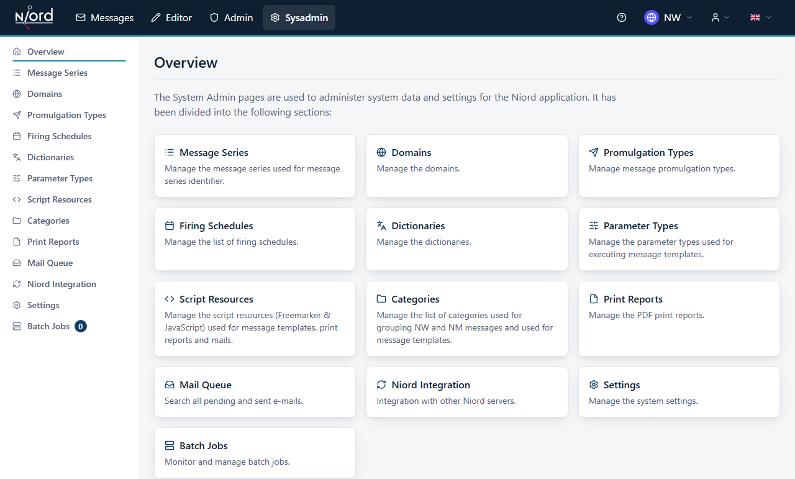
The area opens on its Overview: a short introduction and a card for each section. Click a card to open the section. The same sections are listed in the rail on the left, which stays in place while you work; in a narrow window the rail becomes a row of tabs above the page. The rail’s Batch Jobs entry shows how many batch jobs are running.
| Section | What it holds |
|---|---|
How messages are numbered and given their short ID, for each series of messages. |
|
The domains users work in, each a client of Keycloak, and what each domain may hold. |
|
The extra channels a message can be sent through, such as NAVTEX and audio. |
|
The schedules that turn firing periods into firing exercise warnings. |
|
The translatable texts of Niord: interface texts, texts of messages, mails and reports, and the values of template parameter lists. |
|
The kinds of parameters editors fill in when they execute a message template. |
|
The Freemarker templates and JavaScript files used by message templates, print reports and mails. |
|
The message categories and the message templates. |
|
The PDF reports of message lists. |
|
The mails Niord has sent or is about to send. |
|
The system settings. |
|
The background jobs, such as imports, and their logs. |
The Niord Integration section, which imports messages from another Niord server, is listed only
where the setting adminIntegrationPageEnabled is on (see Integration).
3.1. Working with the Sysadmin Lists
The sections of the area work alike, so this is said once here:
-
A section opens on a list. The Filter field above it narrows the list as you type; the chapter of each section says what the filter matches. The cross in the field clears it.
-
The button on the right of the toolbar adds a row, such as New Message Series.
-
Each row has its actions at the right end: the pencil edits the row, the double square copies it (where the section offers a copy), and the bin deletes it. A delete asks first, and Yes deletes.
-
Adding, copying and editing open a panel on the right of the page, the editor drawer, with the row’s fields. Its save button, such as Save Message Series, stays disabled until you change something and the required fields are filled in; Cancel closes the drawer. A copy opens as a new row with the copied values. Its identifier must be unique: most sections leave it empty for you to give, while a dictionary entry keeps the key and a script resource the folder of its path, for you to change. If you close the drawer with changes that are not saved, Niord asks "You have unsaved changes. Leave without saving?" first.
-
Where a section can export and import its rows, the cog at the right end of the toolbar opens its action menu with Export… and Import…. Export… downloads the rows as a JSON file. Import… opens a dialog where you choose a JSON file (Choose file…, or drop it on the dialog). In most sections the import starts as soon as the file is chosen and runs in the background as a batch job; the dialog shows the upload result, and most sections add a link, View batch job, to the job’s page under Batch Jobs. The Dictionaries and Script Resources sections show what an import would change before anything is written. What an import does to rows that exist already differs from section to section, and each chapter says it.
4. Message Series
A message series is a numbered run of messages, such as the coastal warnings of one authority or its notices to mariners. Every message belongs to one series, which the editor chooses in the message’s ID field. The series decides which messages it can hold (navigational warnings or notices to mariners, and which types of them), how its messages are numbered, and the format of their short ID, the identifier a message is known by once it is published, such as "NW-012-26". A domain lists the series its editors may use (see Domains).
The Message Series page lists the series of all domains. To open it, click Sysadmin in the main menu, then Message Series.
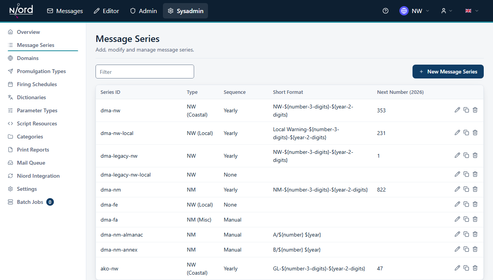
The columns are:
-
Series ID: the series' identifier.
-
Type: the main type, NW (navigational warnings) or NM (notices to mariners), and in brackets the types the series is restricted to, if any.
-
Sequence: how the series numbers its messages (below).
-
Short Format: the format of the short ID.
-
Next Number: for a series that numbers its messages itself, the number the next message published this year will get. The heading names the year, as the clock of the current domain reads it.
The Filter field matches the series ID only. Message series have no import or export.
4.1. Adding or Editing a Message Series
Click New Message Series to add a series, the pencil of a row (Edit Message Series) to edit one, or the double square (Copy Message Series) to start a new series from a copy of one. Each opens the editor drawer:
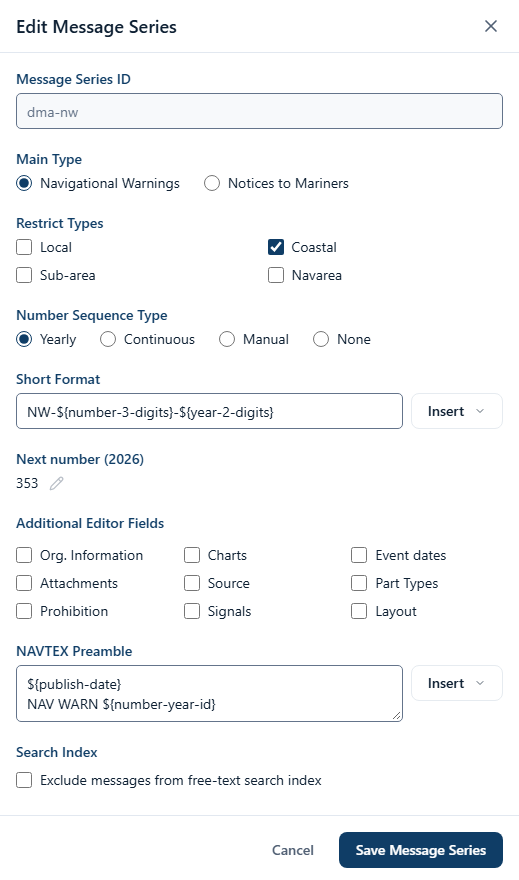
| Field | Description |
|---|---|
Message Series ID |
A unique identifier, which should be unique across Niord installations too. It cannot be changed once the series is saved; a copy starts with it empty. |
Main Type |
Navigational Warnings or Notices to Mariners: the main type of the series' messages. |
Restrict Types |
The types of the main type the series may hold: for navigational warnings Local, Coastal, Sub-area and Navarea, for notices to mariners Preliminary, Temporary, Permanent and Misc. With none ticked, the series may hold every type of its main type. |
Number Sequence Type |
How a message of the series gets its number, which is assigned when the message is published:
|
Short Format |
The format of the short ID (below). Not shown for the sequence type None. |
Next number |
Shown when you edit a saved series that numbers its messages itself (Yearly or Continuous): the number the next message published this year will get. The pencil beside it opens the Next Message Number panel (below). |
Additional Editor Fields |
Editor fields that are hidden by default and that the message editor shows for every message of the series: Org. Information, Charts, Event dates, Attachments, Source, Part Types, Prohibition, Signals and Layout. A series used only for firing exercise warnings could, for instance, add Signals. Areas and categories can add editor fields in the same way; see the Editor chapter of the Editors Manual. |
NAVTEX Preamble |
Shown for navigational warnings only. The first lines of the NAVTEX text of the series' messages (see Promulgation Types), with the tokens below. |
Search Index |
Exclude messages from free-text search index: the series' messages are left out of the index behind the free-text filter of the message lists, so a text search does not find them. This suits a series of messages Niord generates in large numbers, such as firing exercise warnings. |
Click Save Message Series to save.
4.1.1. The Short ID Format
The Short Format is text with tokens that Niord replaces by values when it gives a message its short ID. The Insert menu beside the field adds a token where the cursor is:
| Token | Replaced by |
|---|---|
|
The year of the message’s publish date: "2026" or "26". |
|
The ISO week number of the publish date, in two digits. |
|
The message’s number: "7", or "007" in three digits. |
|
The message’s internal identifier in the database. |
|
The message’s identifier in the system it was imported from, if any. |
|
Offered for notices to mariners only: "(T)" for a temporary notice, "(P)" for a preliminary one, and nothing for the other types. |
For example, the format NW-${number-3-digits}-${year-2-digits} gives the twelfth warning of
2026 the short ID "NW-012-26". For a series with the sequence type Manual, Niord forms the short ID
from the format when the editor gives the number; with no format, the editor types the short ID
itself, and a message without one cannot be published.
The Insert menu of the NAVTEX Preamble offers ${publish-date}, the publish date in the NAVTEX
form (such as "111200 UTC NOV 26"), and ${short-id}, the short ID. The preamble also understands
${number-year-id}, the number and the two-digit year ("012/26"). Niord fills in the tokens when
the message is published, and writes the preamble in capitals.
4.1.2. Next Message Number
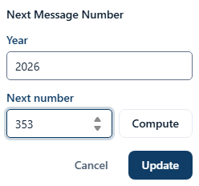
The pencil beside Next number opens the Next Message Number panel, where you set the number the next published message will get:
-
Year: shown for a Yearly series; the year the number belongs to. It starts at the current year.
-
Next number: the number. Compute fills in the number that follows the highest number of the series' messages published in that year (for a Continuous series, in the current year), or 1 when there are none. For a Continuous series, whose numbers run on from year to year, that can be wrong: early in a year, before the year’s first message, Compute gives 1. Check the number before you click Update.
-
Update stores the number at once; Cancel closes the panel without storing it.
The pencil is disabled while the drawer has changes that are not saved: save them first.
4.2. Deleting a Message Series
Click the bin of a row (Delete Message Series) and confirm with Yes. A series that is still in use, by messages, by a domain or by a firing schedule, cannot be deleted: Niord answers "Error deleting message series". Take a series out of use by removing it from its domains instead (see Domains).
5. Domains
A domain is a working space of Niord: a set of message series with the areas and categories their messages may use, such as one domain for navigational warnings, one for notices to mariners, one for the firing areas and their exercises, or one for each region with a time zone of its own. A user always works in one domain at a time, the current domain, which is chosen in the domain menu of the header, and the user’s roles are given per domain.
Each domain is a client of the same name in Keycloak, where the users' roles in the domain are kept; see Keycloak Integration.
The Domains page lists every domain, active or not. To open it, click Sysadmin in the main menu, then Domains.
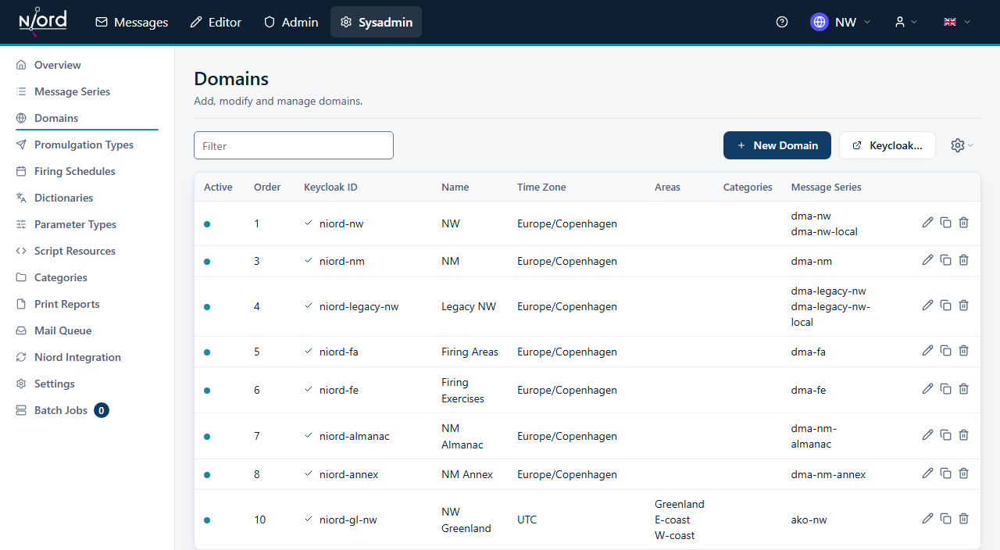
The columns are Active (a dot, filled for an active domain), Order, Keycloak ID (with a tick when the domain’s client exists in Keycloak), Name, Time Zone, and the Areas, Categories and Message Series the domain is limited to. The Filter field matches the Keycloak ID and the name.
Keycloak… in the toolbar opens Keycloak’s administration console in a new browser tab, where Keycloak asks you to sign in.
5.1. Adding or Editing a Domain
Click New Domain to add a domain, the pencil of a row (Edit Domain) to edit one, or the double square (Copy Domain) to start a new domain from a copy of one. Each opens the editor drawer:
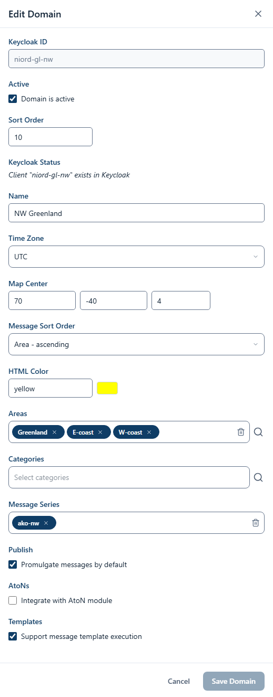
| Field | Description |
|---|---|
Keycloak ID |
The domain’s unique identifier, which is also the name of its client in Keycloak. It cannot be changed once the domain is saved; a copy starts with it empty. |
Active |
Domain is active: only active domains are offered in the domain menu of the header. |
Sort Order |
The domain’s place in the domain menu: lower numbers come first. |
Keycloak Status |
Shown when you edit a saved domain. "Client "<id>" exists in Keycloak" when the client is there; otherwise a Create in Keycloak button that creates it. |
Name |
The name users see in the domain menu. |
Time Zone |
Required. The time zone of the domain: the dates and times users enter and see in the domain, such as a message’s publish dates, are read in it. |
Map Center |
Optional: three fields, in this order the Latitude, the Longitude and the Zoom Level (3 to 15) of the view a map shows when it has nothing to show of its own, such as the messages map, the front page’s map or the position editor of a new message (see the Position Editor). An empty field shows its name. |
Message Sort Order |
How the domain’s message lists are sorted at first: by Area, ID or Date, each ascending or descending. |
HTML Color |
A colour for the domain’s mark in the domain menu: any colour a web page understands, such as
|
Areas |
Optional. The areas the domain’s messages may use: with "The Baltic Sea" chosen, a message of the domain may have "The Baltic Sea" or any of its sub-areas. Empty means every area. |
Categories |
Optional, in the same way for the message categories: with "Firing Exercises" chosen, only that category and its sub-categories. |
Message Series |
The message series of the domain: editors create messages of these series only. |
Publish |
Promulgate messages by default: when a client of Niord’s public interface asks for messages without naming a domain, a message series or a publication, it gets the messages of the active domains that have this ticked. |
AtoNs |
Integrate with AtoN module: kept with the domain for an aids-to-navigation module that is not part of the administration application; it changes nothing there. |
Templates |
Support message template execution: the domain’s editors can create messages from message templates (see the Message Template Execution chapter of the Editors Manual). |
Click Save Domain to save. When you save a new domain, Niord also creates its client in Keycloak. If that fails, the domain is saved all the same and its row has no tick; open the domain again and click Create in Keycloak.
A domain’s firing schedule is set up on the Firing Schedules page, not here.
5.2. Deleting a Domain
Click the bin of a row (Delete Domain) and confirm with Yes. A domain that other data still refers to, such as a firing schedule or a promulgation type, cannot be deleted: Niord answers "Error deleting domain". Untick Domain is active instead, which takes the domain out of the domain menu. The domain’s client in Keycloak is not deleted with it.
5.3. Importing and Exporting Domains
The action menu (the cog) has Export…, which downloads every domain, the inactive ones too, as a JSON file, and Import…, which uploads such a file and runs the domain-import batch job (see Working with the Sysadmin Lists).
The import adds the domains the file has and Niord lacks, with the areas, categories and message series they name: one Niord lacks is created from the file, and one it has is used as it is. A domain that exists already, by its Keycloak ID, is left as it is: an import never changes it. The import does not create clients in Keycloak; use Create in Keycloak for each new domain.
The file is a list of domains, for example:
[
{
"domainId": "niord-nw",
"active": true,
"sortOrder": 1,
"name": "NW",
"timeZone": "Europe/Copenhagen",
"messageSeries": [
{
"seriesId": "nw",
"mainType": "NW",
"types": [ "COASTAL_WARNING" ],
"shortFormat": "NW-${number-3-digits}-${year-2-digits}",
"navtexFormat": "${publish-date}\nNAV WARN ${number-year-id}",
"numberSequenceType": "YEARLY"
},
{
"seriesId": "nw-local",
"mainType": "NW",
"types": [ "LOCAL_WARNING" ],
"numberSequenceType": "NONE"
}
],
"publish": true,
"templates": true
}
]6. Promulgation Types
Besides the message itself, a navigational warning often has to reach mariners through other channels, each in a version of its own: a NAVTEX text for the NAVTEX stations, a SafetyNET text, a text to be read out on the radio, a short post on a social network. Each such channel is a promulgation type. In the message editor, the editor ticks the promulgation types a message is sent through and edits the text of each; see the Promulgation Editor Field in the Editors Manual.
A promulgation type is an instance of a promulgation service, the part of Niord that knows the channel. The base product has four services:
-
NAVTEX mailing list: a NAVTEX text, with the NAVTEX transmitters it is to be sent from.
-
SafetyNET mailing list: a SafetyNET text, with the SafetyNET area it covers.
-
Audio mailing list: a fuller text of the message, worded to be read out on the radio.
-
Twitter: a post on X (formerly Twitter), sent when the message is published.
The first three are delivered by mailing lists (see the Mailing Lists chapter of the Administrators Manual). A country’s Niord can add services of its own. One service can have several promulgation types, for instance one NAVTEX type for each region.
The Promulgation Types page lists the types. To open it, click Sysadmin in the main menu, then Promulgation Types.
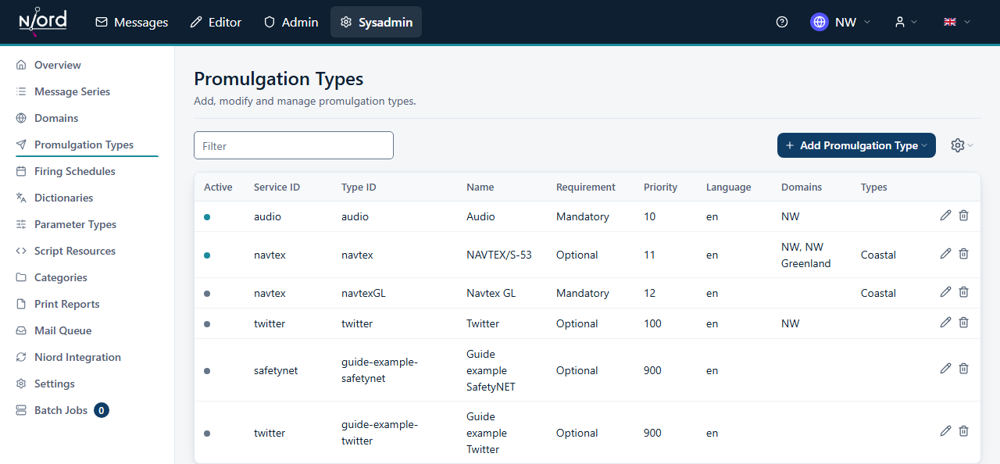
The columns are Active, Service ID, Type ID, Name, Requirement, Priority, Language, the Domains the type is used in, and the message Types it is restricted to. The Filter field matches the type ID, the name and the service ID.
6.1. Adding or Editing a Promulgation Type
To add a type, click Add Promulgation Type and choose its service from the menu, which lists the services of your Niord:
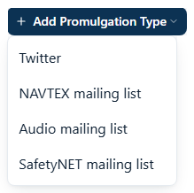
To edit a type, click the pencil of its row (Edit Promulgation Type). Both open the editor drawer:
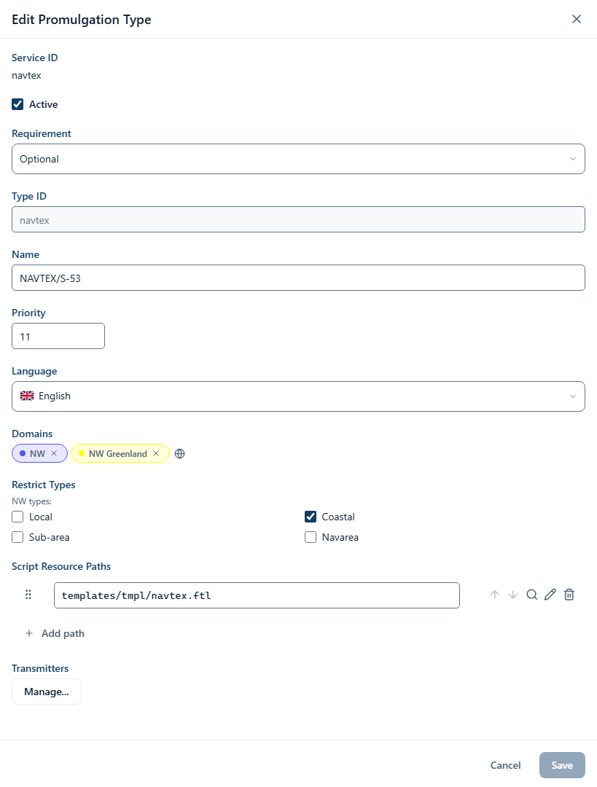
The fields are the same for every service:
| Field | Description |
|---|---|
Service ID |
The service of the type, chosen when the type was added. It cannot be changed. |
Active |
Only active types are offered when a message is created or edited. |
Requirement |
Whether the type is ticked for a message:
|
Type ID |
A unique identifier. It cannot be changed once the type is saved. |
Name |
The name editors see in the message editor. |
Priority |
The type’s place among the promulgation types in the message editor: lower numbers come first. |
Language |
The language the type’s texts are written in, or Any language. A NAVTEX type, for instance, is tied to English. |
Domains |
The domains in whose message editor the type is offered. |
Restrict Types |
The message types the type is offered for, in two groups. The NW types (Local, Coastal, Sub-area and Navarea) show when one of the chosen domains has a message series of navigational warnings, and the NM types (Temporary, Preliminary, Permanent and Misc) when one has a series of notices to mariners; with no domain chosen, both groups show. A group shows whole: the types a series is itself restricted to do not narrow it. A ticked type of a group that no longer shows is dropped when you save. With none ticked, the type is offered for every type. A NAVTEX type, for instance, is restricted to Coastal warnings. |
Script Resource Paths |
Optional. Script resources, such as Freemarker templates, that Niord runs to write the type’s text: when an editor clicks Generate in the type’s part of the message editor (or Generate All, which does it for every ticked type), and when an editor creates a message from a message template. A NAVTEX template can, for instance, begin the text with the message’s area. Add path adds a row; each row has buttons to move it up or down, to pick a script resource from a list, to open it, and to remove the row. Script resources are described in the Script Resources chapter. |
Below these fields, a saved NAVTEX, SafetyNET or Twitter type shows the settings of its service, described next. An Audio type has no settings of its own, so nothing follows its Script Resource Paths. For a type that is not saved yet, the drawer says "Save the promulgation type first to manage its service-specific settings." Click Save to save the type.
6.1.1. Settings of a Service
NAVTEX
A NAVTEX type has a Transmitters row with a Manage… button, which opens the Transmitters dialog of the type:
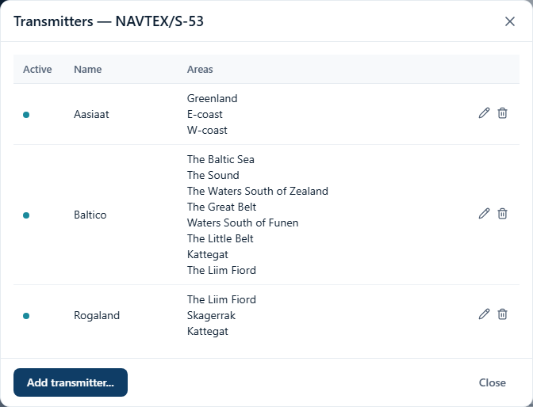
It lists the type’s NAVTEX transmitters with the areas each covers. Add transmitter… adds one, the pencil edits one and the bin deletes one; the form of a transmitter has Active, Name and Areas, and Save stores it and returns to the list. Close closes the dialog.
When an editor ticks the NAVTEX type for a message, Niord offers every active transmitter of the type and ticks those whose areas contain the message’s areas. The NAVTEX text starts with the NAVTEX preamble of the message’s series (see Message Series).
SafetyNET
A SafetyNET type has an Areas row with a Manage… button, which opens the Areas dialog of the type: its SafetyNET distribution areas, with Active, Name, Type (the shape of the area) and Sort Order.
Add Area adds an area of one of the four shapes of the IMO International SafetyNET Manual, and the shape cannot be changed afterwards:
-
Circular: a Center, written "Lat Lon": the latitude and the longitude in whole degrees, separated by a space, each of which may start with a minus sign. Add a Radius in nautical miles, a whole number.
-
Rectangular: the SW Corner, written "Lat Lon" in the same way, and the Northings and Eastings, the extent north and east in whole degrees.
-
Coastal: a NAVAREA and a coastal warning Area, a letter from A to Z.
-
NAVAREA: a NAVAREA, I to XXI.
Niord does not read the positions of a circular or rectangular area: it copies them as written into the SafetyNET mail of the area, so write them the way the receiving SafetyNET service expects.
Every area also has Active, a Name, a Repetition (Transmit once, Two transmissions, 6 min. interval, Every 12 hours or Every 4 hours), a Main Area Prefix that starts the message’s area line (such as "GULF OF GUINEA") and a Sort Order. The active areas are offered when an editor writes the SafetyNET text of a message.
A Twitter type has a Settings row with an Update Settings… button, which opens the OAuth Settings dialog: the format of the posts and the credentials Niord posts with.
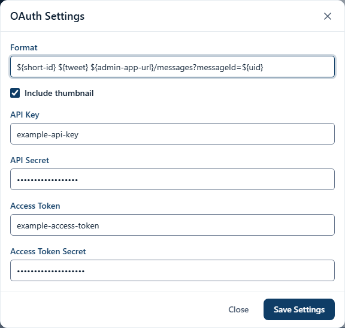
-
Format: the text of a post, with tokens Niord replaces when the message is published:
${short-id}(the message’s short ID),${tweet}(the text the editor wrote for the post, which by default is the message’s title),${uid}(the message’s unique identifier),${admin-app-url}(the address of the administration application) and${base-uri}(the address of the Niord server). Left empty, the format is${short-id} ${tweet} ${admin-app-url}/messages?messageId=${uid}. -
Include thumbnail: a map of the message’s position goes with the post, when the message has a position.
-
API Key, API Secret, Access Token and Access Token Secret: the credentials of the app registered for your account in the developer portal of X. All four are required.
Save Settings stores them and closes the dialog; Close closes it without saving.
6.2. Deleting a Promulgation Type
Click the bin of a row (Delete Promulgation Type) and confirm with Yes. Niord deletes only the type itself, so it refuses a type that something still refers to, and answers "Error deleting promulgation type":
-
a type that messages have been promulgated with. Untick Active instead.
-
a NAVTEX type that still has transmitters, or a SafetyNET type that still has areas. Delete them in the type’s Transmitters or Areas dialog first.
-
a Twitter type whose settings have been saved. The settings cannot be deleted in the application, so untick Active instead.
6.3. Importing and Exporting Promulgation Types
The action menu (the cog) has Export…, which downloads every promulgation type as a JSON file, and Import…, which uploads such a file and runs the promulgation-type-import batch job (see Working with the Sysadmin Lists).
The import adds the types Niord lacks. A type that exists already, by its type ID, is overwritten by the file: its name, active flag, requirement, priority, language, domains, restrict types and script resource paths become the file’s. The settings of the services (NAVTEX transmitters, SafetyNET areas and Twitter settings) are not part of the file and are set up by hand.
The file is a list of types, for example:
[
{
"typeId": "navtex",
"serviceId": "navtex",
"name": "NAVTEX",
"active": true,
"requirement": "OPTIONAL",
"priority": 11,
"language": "en",
"domains": [
{ "domainId": "niord-nw" }
],
"messageTypes": [ "COASTAL_WARNING" ],
"scriptResourcePaths": [ "templates/tmpl/navtex.ftl" ]
}
]7. Firing Schedules
Firing areas are the sea areas where the armed forces hold firing exercises, and mariners are warned of each exercise. Niord writes these warnings by itself: editors keep a schedule of the times each firing area is in use, the firing periods, and Niord turns the periods into firing exercise messages. A firing schedule is the set-up that does this: it names the domain that holds the firing areas' messages and the domain and message series that receive the firing exercise messages.
The Firing Schedules page lists the firing schedules. To open it, click Sysadmin in the main menu, then Firing Schedules.
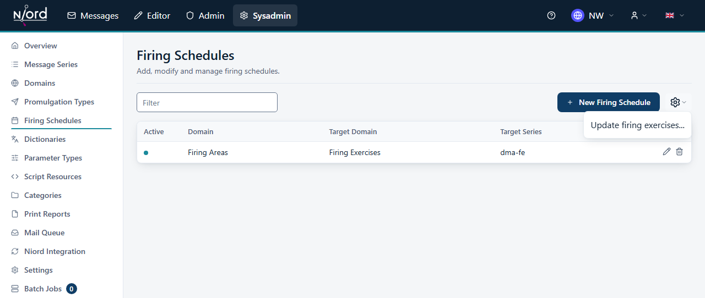
The columns are Active, the Domain of the firing area messages, the Target Domain and the Target Series of the firing exercise messages. The Filter field matches the two domains' names and the target series. The action menu (the cog) has Update firing exercises… (see Generating Firing Exercises); firing schedules have no import or export.
7.1. Firing Exercises System Setup
Before a firing schedule can do its work, these parts must be in place. The editors' side, the Schedule page where they enter the firing periods, is described in the Firing Area Schedule chapter of the Editors Manual.
-
The firing areas. Each firing area is an area of Niord’s base data with the type Firing area, defined by an administrator on the Admin Areas page.
-
A domain for the firing areas, such as Firing Areas, with a message series for notices to mariners. It holds one published message for each firing area, with the firing area among the message’s areas, which describes the area: its limits, the signals, whom to contact, what is prohibited. Editors keep these firing area messages up to date like any other message.
-
A domain for the firing exercises, such as Firing Exercises, with a message series of its own, normally for local navigational warnings. Its messages are written by Niord, so no editor should have the right to edit messages in it.
-
The firing schedule, which ties the two domains together (below). The domain of the firing areas then has the Schedule page in its main menu.
7.1.1. Configuring Firing Area Base Data
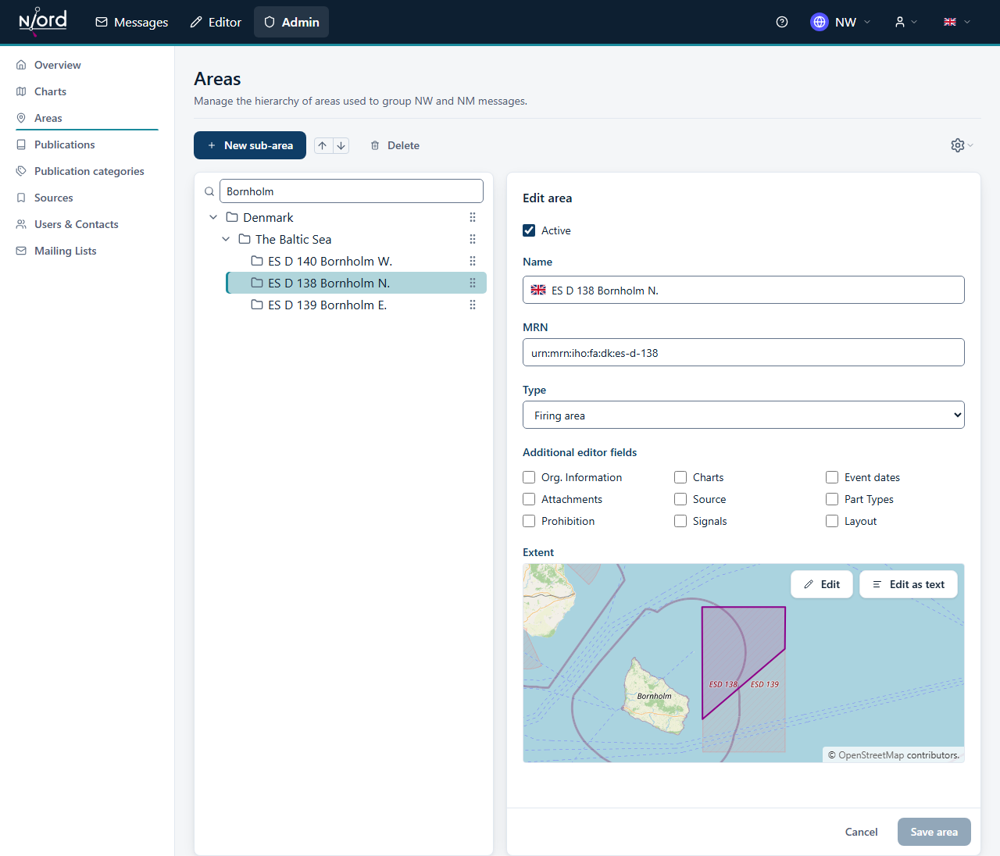
An administrator defines every firing area of the waters on the Admin Areas page, as an area with the Type Firing area. Only areas of that type have firing periods, and only active ones are scheduled.
7.1.2. Create a Firing Areas Domain
The domain of the firing areas holds the firing area messages, one for each area:
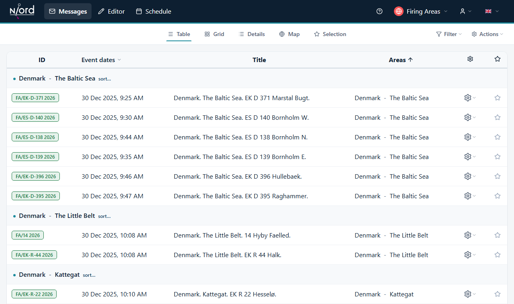
An administrator can have Niord draft a firing area message for every active firing area with Generate firing area messages… in the action menu of the Admin Areas page; editors then complete and publish them. The drafts get the category whose English name is "Firing Exercises", so keep that category and its name (see Categories). The list of these messages is also a natural basis for a yearly publication of the firing areas; see the Publications chapter of the Administrators Manual.
7.1.3. Maintain Firing Exercise Schedule
The editors enter the firing periods of each area, day by day, on the Schedule page of the domain of the firing areas, which they open with Schedule in the main menu. The page is described in the Firing Area Schedule chapter of the Editors Manual. It is there only in a domain that is the Domain of a firing schedule.
7.1.4. Generating Firing Exercises
Every hour, at 21 minutes and 50 seconds past the hour, Niord goes through every firing schedule that has Generate firing exercises ticked:
-
It takes the active firing areas of the schedule’s Domain, and the published messages of that domain’s series that have one of the firing areas among their areas.
-
It takes the firing periods of those areas from today to the number of days ahead the schedule’s Scheduled Days says.
-
For each firing area message with firing periods, it writes a firing exercise message in the Target Message Series: a local warning (or, for a series of notices to mariners, a temporary notice) with the firing area message’s areas, categories, charts, texts and positions, the firing periods as its event dates and as a time text written in the target domain’s time zone, and the subject "Firing exercises. Warning.". It is published at once and expires after its last firing period.
-
A firing exercise message that has the same firing periods as before is kept. When the periods of an area have changed, Niord publishes a new message and cancels the old one, and it cancels the message of an area that has no firing periods left.
The time text and the subject come from the "message" dictionary (the entries
msg.time.date_time_format, msg.time.time_format and msg.firing_exercises.subject; see
Dictionaries).
Update firing exercises… in the action menu of the Firing Schedules page runs the same pass at once, for every active firing schedule, without asking first. Editors have the same action on the Schedule page.
7.2. Adding or Editing a Firing Schedule
Click New Firing Schedule to add a schedule, or the pencil of a row (Edit Schedule) to edit one. Both open the editor drawer:
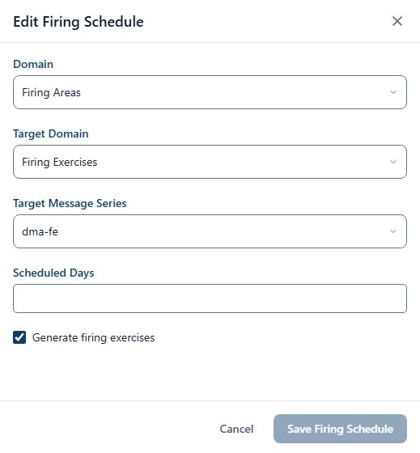
| Field | Description |
|---|---|
Domain |
The domain of the firing area messages. It gets the Schedule page. A new schedule starts with the current domain. |
Target Domain |
The domain the firing exercise messages are written in. |
Target Message Series |
The message series of the firing exercise messages, one of the target domain’s series. When the target domain has one series only, it is chosen for you. |
Scheduled Days |
Optional. How many days ahead the firing exercise messages cover. Left empty, the number is the
setting |
Generate firing exercises |
Ticked, the schedule writes firing exercise messages (the Active column of the list). |
The three domain and series fields are required, and their lists offer the domains in which you hold a role. Click Save Firing Schedule to save.
7.3. Deleting a Firing Schedule
Click the bin of a row (Delete Schedule) and confirm with Yes. Niord stops writing firing exercise messages for the schedule, and its domain loses the Schedule page. The firing exercise messages already published stay until they expire. To pause a schedule instead, untick Generate firing exercises.
8. Dictionaries
A dictionary is a named list of translatable texts. Each entry has a key, such as
msg.field.areas, and a value in each language of the messages. Niord uses the dictionaries for the
words of its messages, mails and PDF reports, for the lists editors choose from when they execute a
message template, and to change wordings of the administration application.
The Dictionaries page shows the entries of one dictionary at a time. To open it, click Sysadmin in the main menu, then Dictionaries.
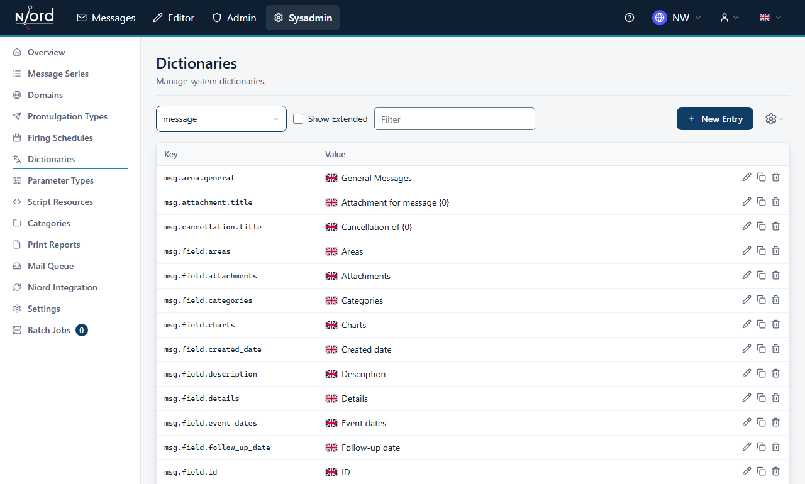
Choose the dictionary in the list at the left of the toolbar. The table shows each entry’s Key and its Value, one line per language with the language’s flag. The Filter field matches the key and the values, and the long values too while they are shown.
8.1. Standard Dictionaries
Niord comes with five standard dictionaries:
| Dictionary | Description |
|---|---|
web |
Texts of the application’s pages. |
message |
Words used in messages, such as the names of the message types and fields, and in the pages, mails and reports that show messages. Firing exercise messages take their subject and time formats from it (see Firing Schedules). |
Texts of the mails Niord sends. |
|
Texts of the PDF reports. |
|
template |
Texts used when message templates are executed, such as the words of dates and positions. |
When Niord starts, it adds each standard key and translation that the database lacks. It never changes one the database has, so a value you have edited stays as you left it.
The administration application has texts of its own for its pages, and lays the entries of the "web" and "message" dictionaries over them by key, so an entry with the key of one of the application’s texts changes that wording. Two rules keep this safe:
-
An entry whose value is still the one Niord added at start changes nothing: the application shows its own, newer text. Once you edit the entry, your value is shown.
-
The value must use exactly the placeholders of the application’s text, such as
{{count}}; otherwise the application keeps its own text.
The application shows the value of the language the user has chosen, or else that of the default language. When you save, delete or import entries, your own application takes the change at once.
8.2. Extended Dictionaries
Some dictionaries hold entries with a second, long value, such as the "aton" dictionary, whose entries are the values of template parameter lists ("north cardinal buoy", "the north cardinal buoy"); see Parameter Types. Such dictionaries arrive with an import (see Importing and Exporting Dictionaries).
Tick Show Extended to see the Long Value column. It is ticked by itself for a dictionary that has long values.
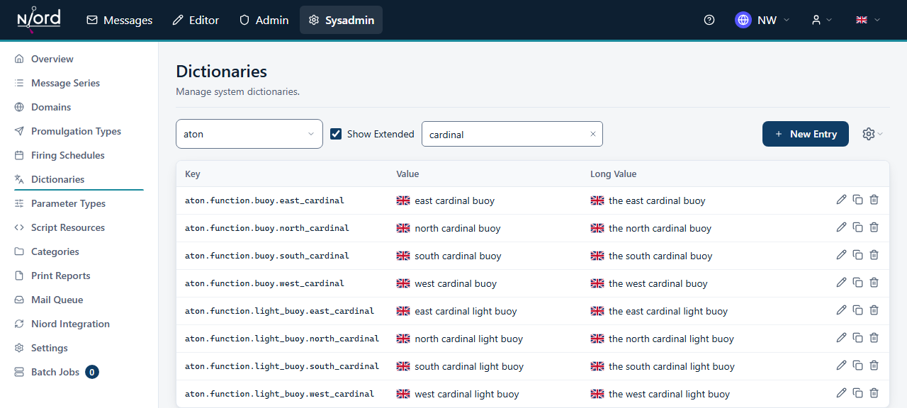
8.3. Adding or Editing a Dictionary Entry
Click New Entry to add an entry to the dictionary shown, the pencil of a row (Edit Entry) to edit one, or the double square (Copy Entry) to start a new entry with the values of one; give the copy a key of its own before you save it. Each opens the editor drawer:
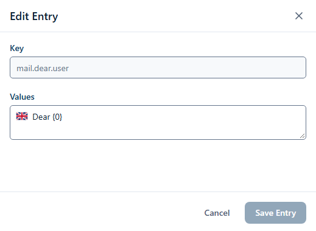
| Field | Description |
|---|---|
Key |
The entry’s key, unique within the dictionary. It cannot be changed once the entry is saved. |
Values |
The text in each language. |
While Show Extended is ticked, the drawer has two more fields:
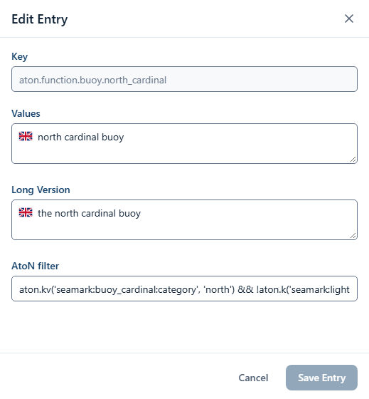
| Field | Description |
|---|---|
Long Version |
The long value in each language. Message templates use it where a phrase reads better in full, such as "the north cardinal buoy". |
AtoN filter |
A rule that ties the entry to aids to navigation, written over their OpenStreetMap seamark tags:
|
The drawer warns when a language has a Long Version but no Value, since that long version is not kept: "A long version without a value will be discarded on save." A new entry needs a value in at least one language before it can be saved. When you blank every value of an existing entry, the drawer warns "All values are blank — the entry will be hard to find and edit afterwards." Click Save Entry to save.
8.4. Deleting a Dictionary Entry
Click the bin of a row (Delete Entry). Before it asks, Niord looks up what uses the key, and the confirmation lists it:
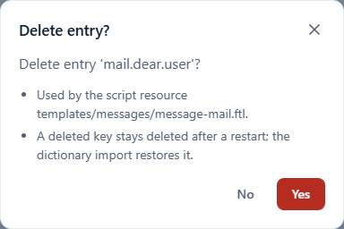
-
the script resources that name the key. For a key that templates build while they run, such as the message statuses (
msg.status.DRAFT), the language names (lang.), the message types (msg.type.) and the message fields (msg.field.), these are the script resources that build keys with that prefix; -
the parts of Niord that read the key, and what each does without it: for instance, the audio text of a message cannot be generated without the
position.*entries of the "template" dictionary, and templates that format date intervals fail to render without thenavwarn.date.*entries; -
the Parameter Types whose list values hold the key. Such a key cannot be deleted: Niord refuses the delete and names the parameter types, until the key is removed from their lists.
When the check cannot be made, the confirmation says so, and the entry can still be deleted, unless a parameter type lists it. Yes deletes the entry, in every language.
A deleted entry is not added again, in any language, also not after a restart or an upgrade of Niord. A template or mail that reads the key fails until a system administrator restores the entry with the dictionary import, ticking the deleted key in its preview (below). A restored key keeps its deleted mark: it gets no default text in a language added to Niord later, and such a language is completed by an import.
8.5. Importing and Exporting Dictionaries
The action menu (the cog) has Export…, which downloads the dictionary shown as a JSON file, and Import…, which opens the Upload Dictionary JSON File dialog.
The file is a list of dictionaries, each with its entries, for example:
[
{
"name": "mail",
"entries": [
{
"key": "mail.dear.user",
"descs": [
{ "lang": "en", "value": "Dear {0}" }
]
}
]
}
]An entry of an extended dictionary has a longValue beside each value, and may have an
atonFilter.
When you choose a file (Choose file…, or drop it on the dialog), the dialog first shows what the import would do, and nothing is written until you import:
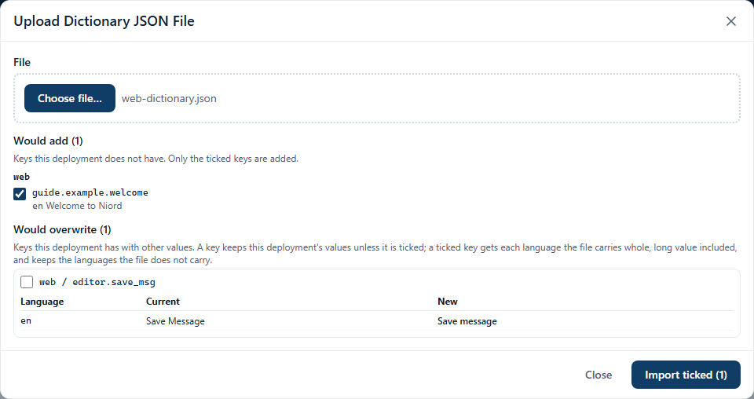
-
Would add: the keys Niord lacks, with their values. Each is ticked, except a key an operator deleted, which is marked "Deleted by an operator" and offered unticked: importing a file to restore one key does not restore every key that was deleted.
-
Would overwrite: the keys Niord has with other values, with the Current and the New value of each language the file carries (and the long value and the AtoN filter where they differ). None is ticked; a key is overwritten only when you tick it. A ticked key gets each language the file carries whole, value and long value, so a long value the file lacks is cleared, and the preview shows "(cleared)"; the other languages are kept, and the AtoN filter is replaced. A key someone changed between the preview and the import is kept, and the job’s log names it as changed since the preview.
-
Unchanged: how many keys already have the file’s values.
-
Refused: the entries Niord cannot hold, each with its reason: a blank key, an entry with no translation, a translation without a language or a value, a key longer than 255 characters, a value or long value longer than 1,000, an AtoN filter longer than 255, a control character other than tab and newline, or a key that appears twice in one dictionary of the file. An empty value is accepted: Niord’s own texts have one (
navwarn.date.time_interval_prefixin English).
Import ticked imports the ticked keys with the dictionary-import batch job, whose log names each refused entry and counts what was added, overwritten, kept and left unchanged; the dialog then links to the job (View batch job). Close closes the dialog without importing. A batch set uploaded on the Batch Jobs page cannot run the dictionary import (see Batch Sets).
9. Parameter Types
When an editor creates a message from a message template, the template asks for the details the message needs: the type of a buoy, the depth over a wreck, a name. Each such question is a template parameter, and its parameter type decides how it is asked: as a text field, a number, a tick box, a list to choose from, or a group of these. The templates and their parameters are set up under Categories; how editors execute templates is described in the Message Template Execution chapter of the Editors Manual.
The Parameter Types page lists the parameter types. To open it, click Sysadmin in the main menu, then Parameter Types.
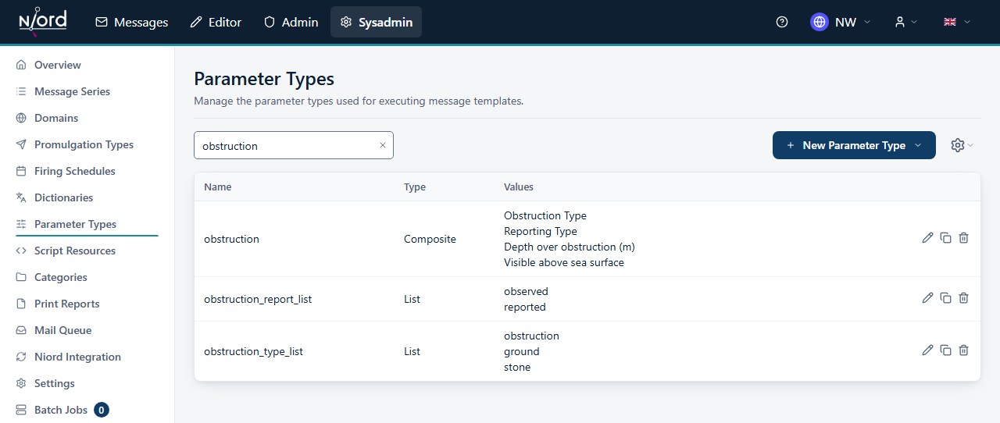
There are three kinds of parameter types, shown in the Type column:
| Kind | Description |
|---|---|
Standard |
The fixed types of Niord: text, number, boolean, date, aton_name, light_character and call_sign. They are asked with a plain field of their kind, such as a text field for text and a tick box for boolean. They cannot be changed or deleted, so their rows have no actions. |
List |
A named, ordered list of dictionary entries (see Dictionaries): the editor chooses one of them from a list. |
Composite |
A named group of standard and list parameters, asked together. |
The Values column shows the values of a list type and the parameters of a composite type. The Filter field matches the name.
For example, the "Wreck" message template asks for one parameter of the composite type wreck:
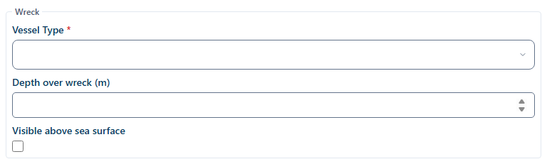
The type wreck is made of a parameter of the list type vessel_type_list for the kind of vessel, one of the standard type number for the depth over the wreck, and one of the standard type boolean for whether the wreck is visible above the surface. The list type vessel_type_list holds three entries of the "aton" dictionary: "vessel", "fishing vessel" and "sailing vessel".
9.1. Adding or Editing a Parameter Type
To add a parameter type, click New Parameter Type and choose List Param Type or Composite Param Type:
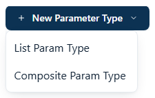
To edit a list or composite type, click the pencil of its row (Edit). Either way the editor drawer opens, with the type’s Name, which must be unique, and its values or parameters. Click Save to save the type.
9.1.1. List Parameter Type Edit Page
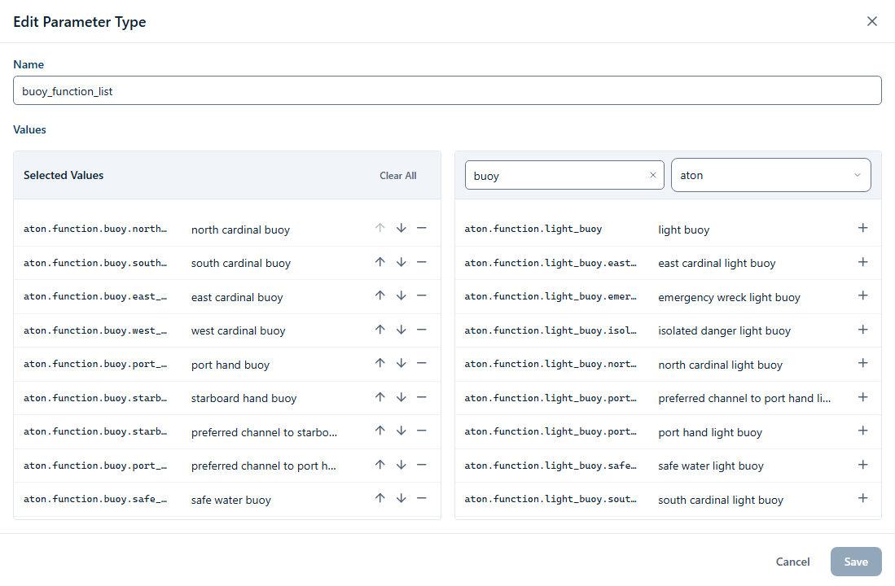
The Values have two panels:
-
Selected Values, on the left, is the list in its order: each entry’s key and value. The arrows of a row (Move up and Move down) move it in the list, and the minus (Remove) takes it out. Clear All empties the list.
-
On the right are the entries you can add. Choose the dictionary in the list at the top and narrow the entries with the Filter field, which matches their keys; the plus (Add) of an entry adds it at the end of the list. The entries already in the list are not offered.
9.1.2. Composite Parameter Type Edit Page
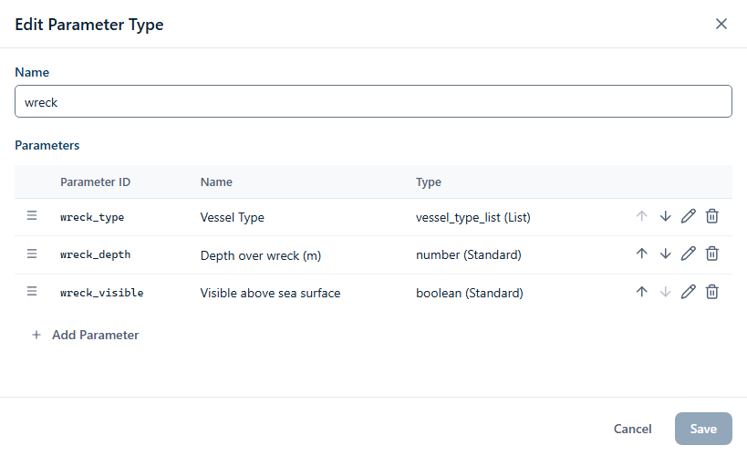
The Parameters table lists the nested parameters with their Parameter ID, Name and Type. The arrows of a row (Move up and Move down) change their order, the pencil (Edit) edits one, and the bin (Remove) takes it out. Add Parameter adds one. Add Parameter opens the New Parameter dialog and the pencil the Edit Parameter dialog; both have the same fields:
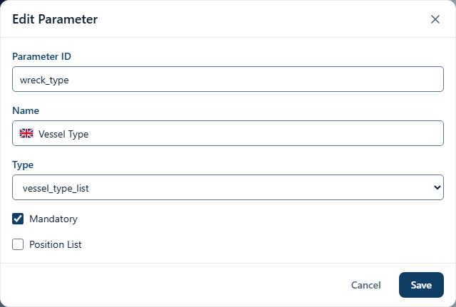
-
Parameter ID: unique within the composite type. Templates refer to the value by it.
-
Name: the label the editor sees, in each language.
-
Type: a standard or list parameter type. A composite type cannot hold another composite type.
-
Mandatory: the editor sees the parameter’s label marked with a red asterisk, and a list parameter cannot be cleared once a value is chosen. Niord does not check that the editor gives a value: a template that cannot do without one has to cope with an empty value itself.
-
Position List: the parameter is asked once for each position of the message (below).
Save in the dialog puts the parameter in the table; the type itself is saved with the drawer’s Save.
A parameter tied to the position list is repeated for each position the editor gives the message. In the example below, the "Buoy off station" template has two positions, and its "Buoy" parameter is asked once for each:
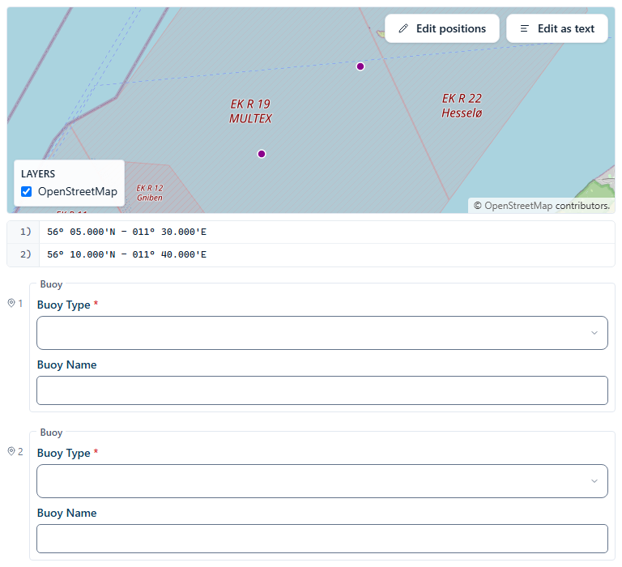
9.2. Copying a Parameter Type
Click the double square of a row (Copy) to start a new parameter type with the values or parameters of an existing one. The copy opens with an empty name, which you give it.
9.3. Deleting a Parameter Type
Click the bin of a row (Delete) and confirm with Yes. Niord does not check whether the type is in use, so first make sure that no template (see Categories) and no composite parameter type has a parameter of the type.
9.4. Importing and Exporting Parameter Types
The action menu (the cog) has Export…, which downloads every list and composite parameter type as a JSON file, and Import…, which uploads such a file and runs the param-type-import batch job (see Working with the Sysadmin Lists).
The import adds the types Niord lacks and overwrites the ones it has, by name: a list type’s values and a composite type’s parameters become the file’s. The values of a list type are dictionary entries, found by their keys; a value whose key no dictionary has is left out, so import the dictionary entries first. An item with the name of a standard type is skipped.
The file is a list of types, for example:
[
{
"type": "COMPOSITE",
"name": "wreck",
"templateParams": [
{
"paramId": "wreck_type",
"type": "vessel_type_list",
"mandatory": true,
"positionList": false,
"descs": [ { "lang": "en", "name": "Vessel Type" } ]
},
{
"paramId": "wreck_depth",
"type": "number",
"mandatory": false,
"positionList": false,
"descs": [ { "lang": "en", "name": "Depth over wreck (m)" } ]
}
]
},
{
"type": "LIST",
"name": "vessel_type_list",
"values": [
{ "key": "vessel.type.vessel" },
{ "key": "vessel.type.fishing_vessel" },
{ "key": "vessel.type.sailing_vessel" }
]
}
]10. Script Resources
A script resource is a small program that Niord keeps in its database and runs on the server: a Freemarker template (a path ending in ".ftl"), which turns data into text such as HTML, or a server-side JavaScript file (a path ending in ".js"), which looks up or changes data. Message templates, print reports, mails and several smaller functions are made of them.
The Script Resources page lists them and lets you add, change, copy, delete, export and import them. You open it as a system administrator from Sysadmin → Script Resources.
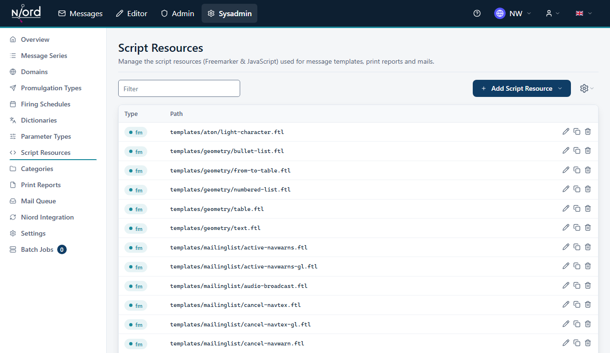
Each row shows the type of the script resource, "fm" for a Freemarker template or "js" for a JavaScript file, and its path. Type a part of a path in the Filter field above the list to show only the paths that contain it. The list shows 20 rows at a time, with a pager below it when there are more. The buttons at the end of a row edit, copy and delete the script resource.
If you want to write script resources, you should know the two technologies, which the Server-Side JavaScript and Freemarker Templates sections introduce.
10.1. Script Resource Usage
The table below lists the functions of Niord that use script resources, and the folders their script resources are usually kept in:
| Function | Description |
|---|---|
Print Reports |
A print report makes a PDF from a list of messages: a Freemarker template turns the messages into HTML, and Niord turns the HTML into a PDF. The reports are set up on the Print Reports page, and their templates are usually under "templates/messages/". |
Message Templates |
A message template (an executable category) generates a message from what an editor enters. JavaScript files prepare the data and Freemarker templates write the message’s fields in an intermediate format, described in Intermediate Message Template Format. Their script resources are usually under "templates/tmpl/". |
Mailing Lists |
A mailing list trigger writes its mails with Freemarker templates, and may run JavaScript files to select or prepare the messages. See the Mailing Lists chapter. Their script resources are usually under "templates/mailinglist/". |
Promulgation Types |
Some promulgation types use script resources to write their text, as the Promulgation Types chapter describes. |
Miscellaneous |
Freemarker templates also do smaller jobs, such as writing a light character (e.g. "Al.Bu.Y 3s") as text, and formatting message positions in different ways, as in the Insert Locations function of the editor. |
10.2. Where Script Resources Come From
Niord reads a script resource from its database, and from nothing else. A new deployment gets the base product’s script resources once, from its bootstrap; after that, a new or changed script resource reaches the deployment only when you add or change it on this page, or when you import it from a release file. Niord never copies a script resource from its own program files into the database, and it never puts back or resets one you changed or deleted. The Bootstrap, Releases and Imports chapter describes how this works.
A path that has no row in the database resolves to nothing: a report, a mail or a template that names it does
not work. The missing-path report lists every path that something names but the database lacks: a path named by
a category, a mailing list trigger, a promulgation type or a print report, a path included or loaded by another
script resource, a path the Niord program itself needs, and a language variant of a path that is named (see
Language-Specific Freemarker Templates). It also lists a built-in print
report (standard, draft or public) that the deployment lacks. Niord writes the report to its log every time
it starts, except on a new database whose bootstrap has not been applied (while it waits, runs or has failed), and a
system administrator can ask for it at any time at the address /rest/script-resources/missing-paths of the
server; it only reads. When you import a release file, its preview marks the paths the report lists (see
Importing and Exporting Script Resources).
Script resources may include each other, so that common code is written once: a Freemarker template can include other templates, and a JavaScript file can load other JavaScript files from the database. The sections below show how.
10.3. Server-Side JavaScript
Niord runs JavaScript on the server with the Nashorn engine (https://openjdk.org/projects/nashorn/). A script can call Niord’s services to look up and change data.
| A script that runs on the server can do anything Niord can do, delete data included. Only a system administrator can add or change a script resource, or run a script of their own (see Execute JavaScript), and the role is meant for the few people who set up and run the whole system. The stored script resources themselves run for every user whose work calls them: when an editor runs a message template or prints, and when a mailing list sends its mails. |
The following example searches for published messages of a firing exercises message series (here with the invented series id "example-fe"):
var searchService = CdiUtils.getBean(org.niord.core.message.MessageSearchService.class);
var seriesIds = java.util.Collections.singleton('example-fe');
var searchParams = new org.niord.core.message.MessageSearchParams();
searchParams.seriesIds(seriesIds)
.statuses(org.niord.model.message.Status.PUBLISHED);
var searchResult = searchService.search(searchParams);10.3.1. Inclusion in JavaScript
A JavaScript file can load another JavaScript file from the database. For example, "templates/tmpl/common.js" holds functions that many other scripts load:
/** Always load using the full path and a "niord:" prefix **/
load('niord:templates/tmpl/common.js');10.4. Freemarker Templates
The documentation of Freemarker is at https://freemarker.apache.org.
A Freemarker template turns data, such as a list of messages, into text: usually HTML, sometimes plain text or XML. The following template, "templates/geometry/text.ftl", is given a "geometry" (a list of positions) and a "format", and writes the positions as a comma-separated list:
<#assign formatPos = "org.niord.core.script.directive.LatLonDirective"?new()>
<#if geometry?has_content>
<#list geometry as feature>
<#if feature.coordinates?has_content>
<#list feature.coordinates as coord>
<@formatPos lat=coord.coordinates[1] lon=coord.coordinates[0]
format=format />
<#if coord?has_next>, </#if>
</#list>
</#if>
<#if feature?has_next>, </#if>
</#list>
</#if>A template may create, with ?new(), only Niord’s own directives, such as the LatLonDirective above: a template
that names another class does not run.
10.4.1. Inclusion in Freemarker Templates
A Freemarker template can include other templates from the database. For example, "templates/tmpl/common.ftl" and "templates/messages/message-support.ftl" hold functions and macros that many other templates include:
<!-- From the same folder -->
<#include "common.ftl"/>
<!-- From another folder -->
<#include "../tmpl/common.ftl"/>10.4.2. Language-Specific Freemarker Templates
When Niord loads a template, or a template it includes, it first looks for a variant for the language it writes in. If, for example, "templates/aton/light-character.ftl" is loaded to write French, Niord uses "templates/aton/light-character_fr.ftl" when that path exists, and the template without a language otherwise.
10.4.3. Dictionaries in Freemarker Templates
A template writes fixed texts from the dictionaries described in the Dictionaries chapter, so that one template serves every language. A mail template can use the "message" and "mail" dictionaries, a print report template the "message" and "pdf" dictionaries, and so on. For example:
<!-- Writes the dictionary entry "pdf.toc" -->
<h2>${text("pdf.toc")}</h2>
<!-- Writes an entry whose text holds a {0} placeholder -->
${text('cancellation.this_message', cancelDate)}10.5. Intermediate Message Template Format
A message template does not write a message directly. Its Freemarker templates write an intermediate XML format, which says which field of the message to fill in and with what. See also the Categories chapter and the Message Template Execution chapter of the editors' manual.
A template is given this data:
| Data | Description |
|---|---|
message |
The message the template fills in, made from the fields the editor filled in on the template execution page. |
params |
The template’s parameters, as the editor entered them. |
template |
The message template (the executable category) being run. |
languages |
The languages to write the message in. |
The template writes a list of <field-template> elements, one for each field of the message it fills in. For
example:
<field-template field="part.getDesc('en').subject" format="text">
Denmark. Kattegat. Randers Fiord. Light unlit.
</field-template>
<field-template field="part.getDesc('en').details" format="html">
<p>The light Voer Brohoved in pos. 56° 31.2'N - 010° 13.8'E is unlit.</p>
</field-template>
<field-template field="message.promulgation('audio').text" update="append">
The light Voer Brohoved in position 56 degrees 31.2 minutes north 10 degrees 13.8 minutes east is unlit.
</field-template>
<field-template field="message.promulgation('navtex').text" update="append">
LIGHT VOER BROHOVED 56-31.2N 010-13.8E
UNLIT.
</field-template>The "field" attribute (a JavaScript expression) names the field of the message to fill in. The "update" attribute says whether to replace the field or append to it. The "format" attribute says what the content is: with "text", for example, the content is tidied into a single line of text.
Most script resources are run for one language. The templates of a message template must handle every language of the message themselves, and change the language they write in with:
<#setting locale=lang>10.6. Adding or Editing a Script Resource
To add a script resource, click Add Script Resource and choose Freemarker Template or JavaScript File:
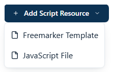
To change one, click its Edit button (the pencil). The editor opens beside the list:
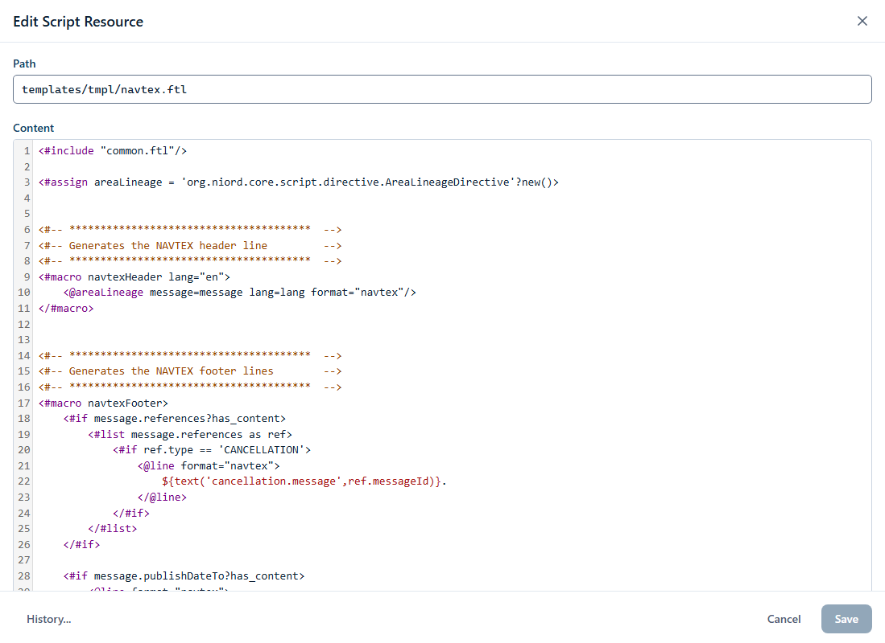
-
Path: the path of the script resource, which must end in ".ftl" for a Freemarker template and in ".js" for a JavaScript file. The type is chosen when the script resource is made and cannot be changed.
-
Content: the template or script, in an editor that colours its syntax.
Save is enabled when you have changed something and the path is valid. Cancel closes the editor; if you have unsaved changes, Niord asks first.
The Copy button of a row opens a new script resource with the same type and content, and the path cut back to its folder, so you only have to give the copy its file name.
Other pages open a script resource for you: the pencil beside a script resource path in the Categories, Print Reports and Promulgation Types editors and in a mailing list’s triggers opens this page, in a new browser tab, with that script resource in the editor. The editor you came from stays open in its own tab, with any changes you have not saved yet. If no script resource is stored at the path, Niord says so ("No script resource is stored at …") and opens nothing.
10.7. Script Resource Revisions
Niord keeps every revision of a script resource: each time it is saved or imported, the new content is kept as a revision. Click History… in the editor to open the Revision History dialog:
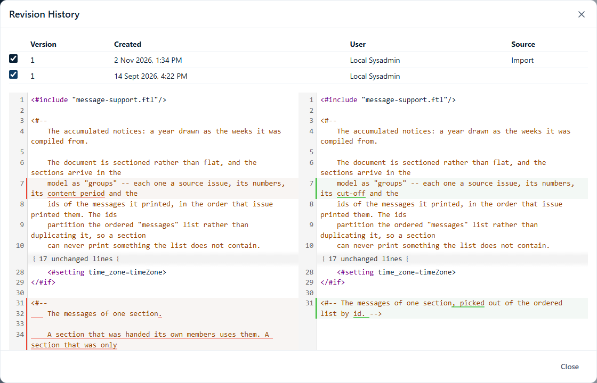
Each revision shows a version number, when it was made, the user who made it and its source: Editor for a save on this page, Import for an import, the bootstrap of a new deployment included. Revisions made before Niord recorded the source show none. Two revisions can have the same version number, as the two in the picture do; when each was made tells them apart. Tick one revision to see its content, or two to see their differences side by side. In the picture, a template that the import of a release changed is compared with its revision from before that import.
10.8. Deleting a Script Resource
Click the Delete button (the bin) of a row, and confirm. Before you delete a script resource, check that no mailing list, print report, message template, promulgation type or other script resource uses it: Niord deletes it all the same, and from then on the missing-path report lists the path wherever something still names it.
10.9. Importing and Exporting Script Resources
The menu of the gear button (Script resource actions) has Export… and Import….
Export… downloads every script resource as one JSON file, a list of entries such as:
[
{
"content": "\n<#macro formatLightCharacterPhase phase multiple=false >\n ...",
"path": "templates/aton/light-character.ftl",
"type": "FM"
},
...
]Import… opens the Upload Script Resources File dialog. Choose a file in this format, for example a release file. Niord first shows what the import would do, and writes nothing until you click Import ticked:
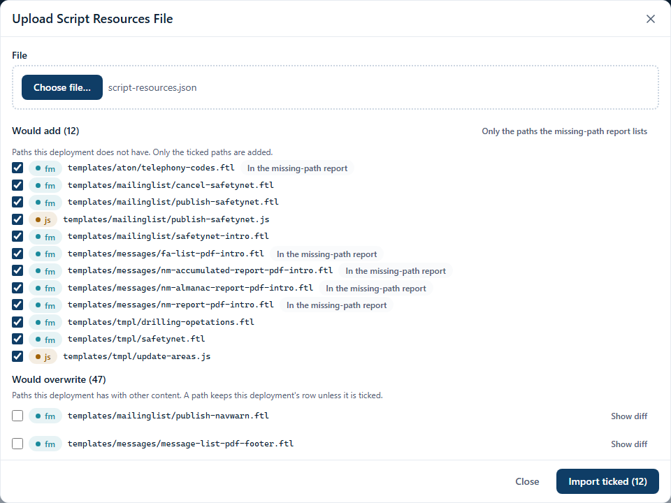
-
Would add: the paths this deployment does not have. They are ticked, and only the ticked paths are added. A path the missing-path report lists is marked In the missing-path report, and the button Only the paths the missing-path report lists unticks all the others in one go.
-
Would overwrite: the paths this deployment has with other content. None is ticked: a path keeps this deployment’s content unless you tick it. Show diff shows this deployment’s content (left) beside the file’s (right). If someone changes a ticked path between the preview and the import, the import keeps that change, and the job’s log names the path as changed since the preview.
-
Unchanged: the number of paths whose content is already the file’s.
-
Refused: the files the import will not take, each with the reason.
Niord finds a script resource by its path without regard to upper and lower case: a path in the file that differs from a stored one only in case is that one, shown under Would overwrite or Unchanged, never added.
Every file is checked before it is imported, and refused when it breaks a rule. The path must be a plain ".ftl" or
".js" path of at most 255 characters, without "..", without a backslash and without a leading "/". A template must
be valid Freemarker, and may create (?new) only Niord’s own directives, named in quotes. A script must not reach
beyond what Niord’s own scripts need: it must not use Packages, Java.type or Java.extend, Java packages
other than java.util, java.time, java.text, java.math and Niord’s own, processes, reflection, eval or
Function(, a load() of anything but a "niord:" path, writes through the entity manager or update queries, or
CdiUtils.getBean of other services than MessageService, MessageSearchService, NavtexPromulgationService,
SafetyNetPromulgationService and AreaService. The check catches mistakes; it is not a security boundary,
which is that only a system administrator imports, and that every import is recorded. The bootstrap of a new
deployment runs the same check. A script resource saved in the editor is not checked.
Import ticked starts the script-resource-import batch job, and the dialog links to it. The job’s log names each refused file and counts what was added, overwritten, kept and left unchanged, and every write is recorded in the script resource’s revisions with your name and the source Import. You follow the job on the Batch Jobs page. A batch set uploaded there cannot run this import (see Batch Sets).
11. Categories
Categories form a tree, such as "Light buoy" with "Light buoy unlit" beneath it. Editors assign categories to navigational warnings and notices to mariners, and filter message lists by them.
A category can also be executable: then it generates a message from what an editor enters, as described in the Message Template Execution chapter of the editors' manual. An executable category is called a message template, or just a template, throughout the Niord documentation.
The Categories page lets a system administrator manage the tree. You open it from Sysadmin → Categories.
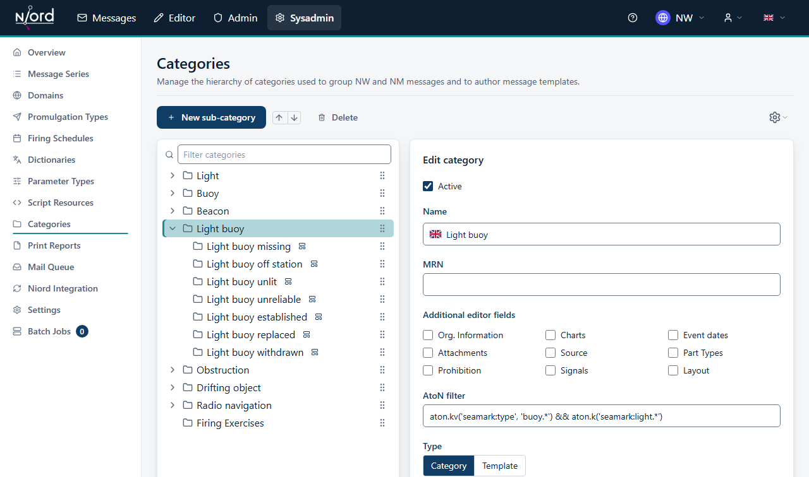
The tree is on the left. Click the arrow before a category to open or close its sub-categories, and click a category to open it in the editor on the right. A template has a template mark after its name. Type a part of a name into the Filter categories field above the tree to show only the categories whose name contains it.
11.1. Adding or Editing a Category
Click a category in the tree to edit it. To add one, click New category when no category is selected, which adds a root category, or New sub-category when one is, which adds a category beneath the selected one. A template cannot have sub-categories: the button is disabled while a template is open in the editor.
The editor shows the attributes every category has:
| Attribute | Description |
|---|---|
Active |
Only an active category can be assigned to a message, or run as a template. |
Name |
The name of the category, in each language the deployment writes messages in. |
MRN |
Optionally, a Maritime Resource Name, a unique name (a URN) for the category. Categories with MRNs can be matched between Niord systems of different countries, and the category import uses the MRN to find an existing category. |
Additional editor fields |
Message editor fields that are shown when the category is assigned to a message. For example, a "Firing Exercises" category assigned to a navigational warning may show the Signals field, which navigational warnings do not normally show. |
AtoN filter |
A filter on Aids to Navigation (AtoNs), written in the
OpenStreetMap (OSM) seamark tags that describe an
AtoN. The filter decides which templates are offered for an AtoN when a template is run from AtoN data. For
example, the "Light buoy" category in the picture above, and every category beneath it, is meant for AtoNs that
match |
Type |
Category or Template. A category of the type Category has no more attributes; a Template has the attributes of the next section. |
Save category saves the category, and Cancel closes the editor without saving.
| The category with the English name "Firing Exercises" is the one the firing schedules give the messages they generate (see Firing Schedules). Niord finds it by that exact English name, so do not rename it. |
11.2. Adding or Editing a Template
A category of the type Template is executable, as described in the Message Template Execution chapter. When you choose the type Template, the editor shows the template’s own attributes below the common ones:
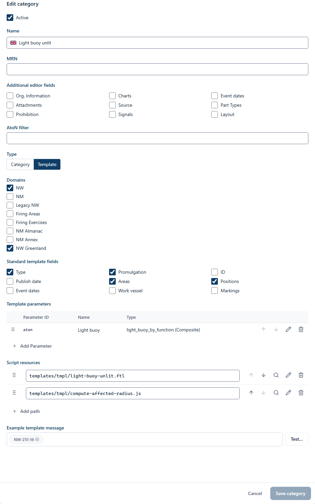
11.2.1. Domains Attribute
Most templates only make sense for navigational warnings, which are short and follow international standards; notices to mariners are written more freely and suit a template system less well. The Domains attribute names the domains whose editors are offered the template.
11.2.2. Standard Template Fields Attribute
The Standard template fields are the fields of the message editor that the template execution page asks for, mostly simplified versions of the editor’s fields (see the Editor chapter of the editors' manual):
| Template field | Description |
|---|---|
Type |
The sub-type of the message, such as Local or Coastal for a navigational warning. |
Promulgation |
Turns the promulgation types of the message on and off. |
ID |
The message series of the message. |
Publish date |
The interval the message is published in. |
Areas |
The areas and the vicinity of the message. |
Positions |
The positions of the message. |
Event dates |
The intervals the event of the message takes place in. |
Work vessel |
The work vessels of, for example, a cable operation. |
Markings |
The markings of, for example, a wreck. |
For example, the "Light buoy unlit" template asks for the type, the promulgation and the areas in the Base fields card of the template execution page:
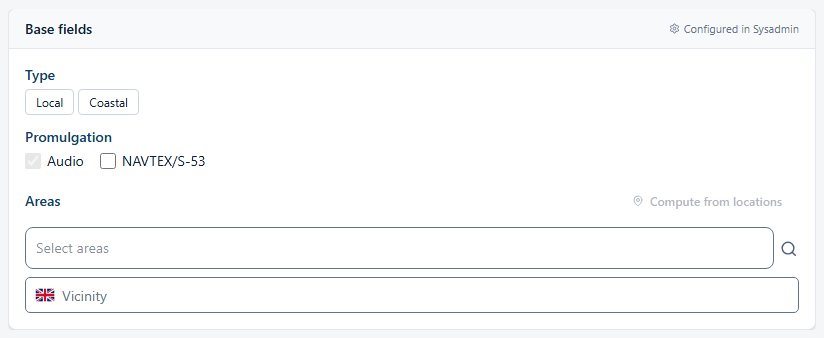
11.2.3. Template Parameters Attribute
Most templates need more from the editor than the standard fields, such as the type and the name of the light buoy in the "Light buoy unlit" template. The Template parameters attribute defines these extra parameters. Each parameter has an id, a name in each language, and a type from the Parameter Types page, and they are defined the same way as the parameters of a composite parameter type (see Composite Parameter Type Edit Page). Add Parameter adds one; the buttons of a row move it up or down, edit it or remove it.
For example, the "Light buoy unlit" template has the parameter "aton" of the composite type "light_buoy_by_function", and asks for it once for each position the editor enters:
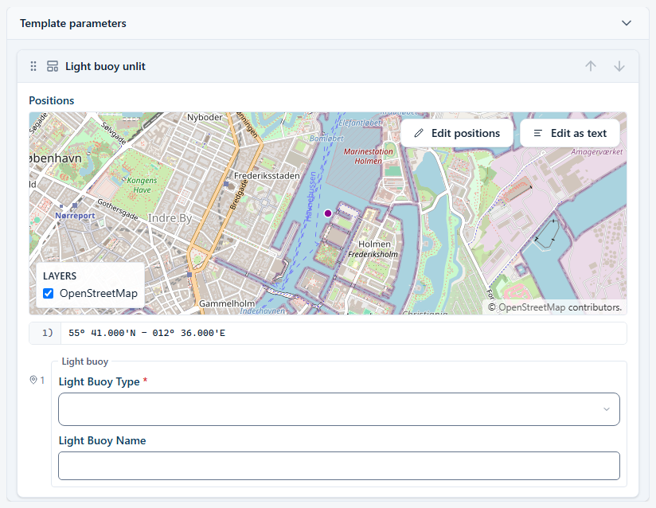
11.2.4. Script Resources Attribute
The Script resources attribute lists the script resources, Freemarker templates and server-side JavaScript files, that run, in their order, when the template is run. The Freemarker templates write the message in the Intermediate Message Template Format; a JavaScript file can change the data. In the "Light buoy unlit" example, the script "compute-affected-radius.js" adds an affected radius to the geometry of the message, from the range of the light.
Each path must be the path of a script resource on the Script Resources page. The buttons of a row:
-
the up and down arrows move the script resource earlier or later; you can also drag it by the handle;
-
the magnifying glass opens a list of the script resources to choose from;
-
the pencil opens the script resource on the Script Resources page;
-
the bin removes the row.
Add path adds an empty row.
11.2.5. Example Template Message Attribute
With many templates, an editor may not know which one to use. The Example template message is a message the template was made for; it is shown when the editor points at the template in the list of templates (see the Template Selection section of the editors' manual).
Test… runs the template, as it stands in the editor and before you save it, on the example message, and shows the message it generates in the Template Result dialog, one button per language when the deployment has more than one. Nothing is saved. The example message must belong to a message series of your current domain.
Test… gives the template no parameters: the text a template writes from its parameters, such as the name of the light buoy in "Light buoy unlit", stays empty in the result. The picture shows the result of the "Wreck" template, whose text needs no parameter:
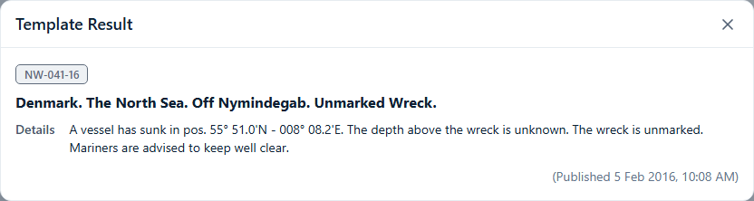
11.3. Reorganizing Categories
You change the place of a category in two ways:
-
To move a category beneath another parent, drag it there by its handle in the tree, and confirm.
-
To move a category up or down among the categories of its parent, select it and click the up or down arrow above the tree.
Re-index categories in the menu of the gear button (Category actions) recomputes the sort order of the whole tree.
11.4. Deleting a Category
Select the category and click Delete above the tree, and confirm. The category is deleted with all its sub-categories. Niord does not delete a category, or one of its sub-categories, that a message of any status has now, or that a domain names among its categories: it says "Error deleting category", and nothing is deleted. Make such a category inactive instead, or remove it from the messages and the domains first.
11.5. Importing and Exporting Categories
The menu of the gear button (Category actions) has Export… and Import….
The file is a JSON list of the root categories, each with its sub-categories in its children field.
An import is merged into the existing tree. Niord looks for an existing category with the MRN of an imported category, or, when it finds none, with one of its names under the same parent.
Example:
[
{
"active": true,
"descs": [
{ "name": "Light", "lang": "en" }
],
"type": "CATEGORY",
"atonFilter": "aton.kv('seamark:type', 'light.*')",
"children": [
{
"active": true,
"descs": [
{ "name": "Light unlit", "lang": "en" }
],
"type": "TEMPLATE",
"siblingSortOrder": 0.0,
"domains": [
{ "domainId": "niord-nw" }
],
"stdTemplateFields": [
"areas",
"type",
"promulgation",
"positions"
],
"templateParams": [
{
"paramId": "aton",
"type": "light",
"mandatory": false,
"positionList": true,
"descs": [
{ "name": "Light", "lang": "en" }
]
}
],
"scriptResourcePaths": [
"templates/tmpl/light-unlit.ftl",
"templates/tmpl/compute-affected-radius.js"
],
"messageId": "NW-003-17"
},
...
]
},
...
]The import runs as the category-import batch job, which you follow on the Batch Jobs page.
12. Print Reports
A print report makes a PDF from a list of messages. Editors choose one when they print messages, as described in the Print Action section of the editors' manual, and a publication series that makes its PDF from messages names one too (see the Publications chapter of the administrators' manual).
The Print Reports page lets a system administrator manage the print reports. You open it from Sysadmin → Print Reports.
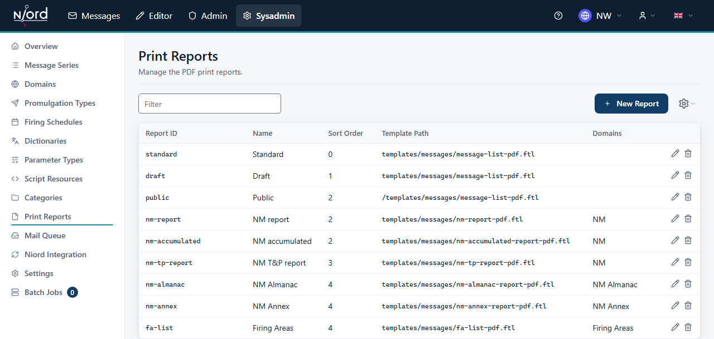
Each row shows the report’s ID, its name, its sort order, the path of its template and the domains it is offered in; a report without domains is offered in every domain. Type a part of an ID or a name in the Filter field to show only the reports that match. The buttons at the end of a row edit and delete the report.
When an editor prints, the Print dialog offers the reports of the current domain, in their sort order. A report can ask the editor for parameters, such as the week and the year of the "NM report" below, a deployment’s own weekly report:
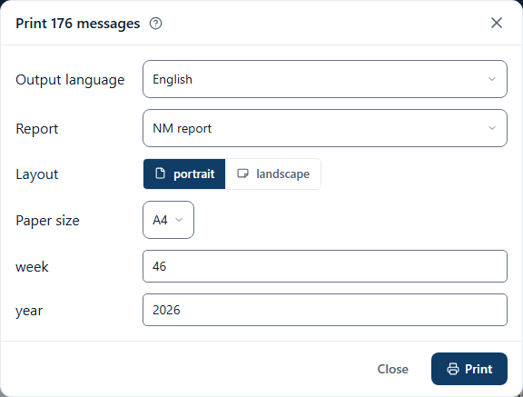
The template of the report can write these parameters into the PDF: the "NM report" writes the week and the year into its title and into the header of every page. A report may also have no parameters, like the Standard report. The picture below shows the first page of a PDF printed with it: the search criteria of the list and a table of contents.
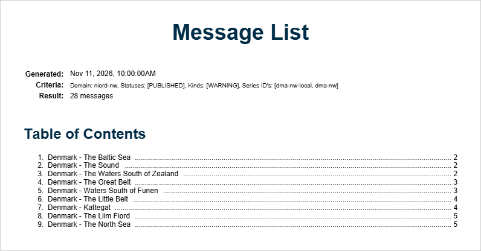
12.1. Standard Reports
A new deployment gets three print reports from its bootstrap, offered in every domain:
| Report | Description |
|---|---|
Standard ( |
Prints the details of each message of the list in the language chosen. Its front page shows the search criteria of the list and a table of contents. Niord also uses it when a print names no report. |
Draft ( |
Like Standard, but prints every language of each message and a few extra fields, such as the message’s type and status. It is meant for proof-reading. |
Public ( |
The Standard report without the front page. The public site prints its message lists with it. |
These reports are data like any other: you may change them, and Niord does not put back a report you deleted. A print that needs a built-in report the deployment lacks fails, saying which report is missing, and the missing-path report lists it (see Where Script Resources Come From). To get it back, import it on this page, for example from an export of another deployment.
12.2. Generating PDFs
Niord makes a PDF in two steps. First, the Freemarker template of the report turns the list of messages into HTML. Then Niord turns the HTML into a PDF.
The page size, the page breaks, and the headers and footers of the PDF are set in the template’s style sheet with CSS Paged Media. If you write or change report templates, read about it first, for example:
-
https://www.w3.org/TR/css-page-3/ - the CSS Paged Media specification.
-
https://www.smashingmagazine.com/2015/01/designing-for-print-with-css/ - an introduction to paged media.
12.3. Adding or Editing a Print Report
Click New Report to add a print report, or the Edit Report button (the pencil) of a row to change one. The editor opens beside the list:
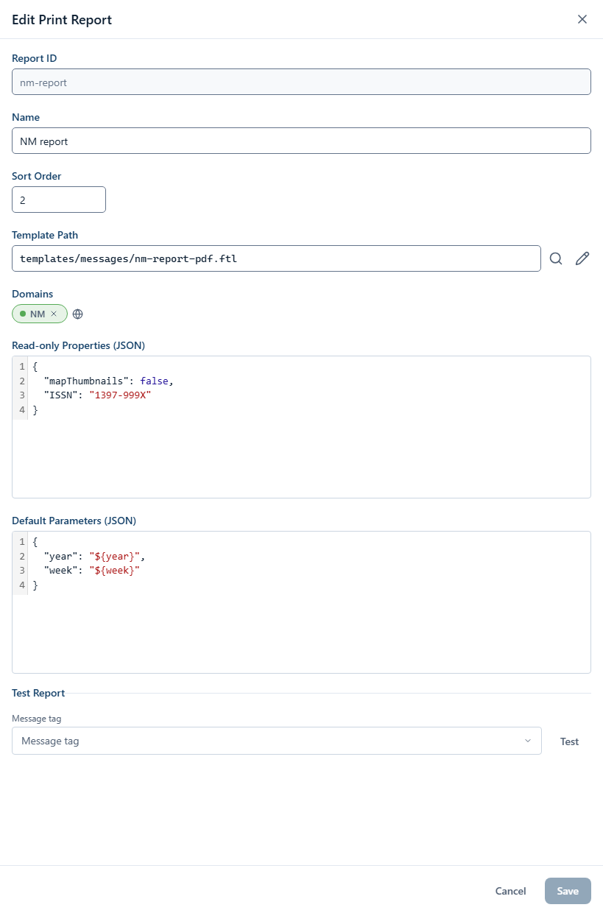
The attributes of a print report:
| Attribute | Description |
|---|---|
Report ID |
A unique ID of the report. It cannot be changed once the report is saved. |
Name |
The name the Print dialog shows. |
Sort Order |
The place of the report in the Print dialog’s list (10 for a new report). |
Template Path |
The Freemarker template that writes the report’s HTML: the path of a template (".ftl") on the Script Resources page. The magnifying glass opens a list of the templates to choose from, and the pencil opens the template on the Script Resources page. |
Domains |
The domains the report is offered in. Leave it empty to offer the report in every domain. |
Read-only Properties (JSON) |
A JSON object of values the template can use, which the editor printing cannot change. In the "NM report"
example, the ISSN printed on the report comes from these properties. One property is read by Niord itself:
|
Default Parameters (JSON) |
A JSON object like the read-only properties, but each parameter is shown in the Print dialog, where the editor
can change it before printing. A default value may hold the tokens |
Niord refuses to save while a JSON field is not valid JSON, and says so under the field ("Invalid JSON").
Under the attributes, Test Report lets you try the report. Optionally choose a Message tag, and click Test: the Print dialog opens with this report and the parameters as they are in the editor, and Print prints the messages that carry the tag. Without a tag, Print prints the published messages of the message series of your current domain, at most 1,000 of them, so choose a tag that holds a few messages to keep the test short. The PDF is made with the report’s template as it is saved, so save a change to the template before you test it.
12.4. Deleting a Print Report
Click the Delete Report button (the bin) of a row, and confirm.
12.5. Importing and Exporting Print Reports
The menu of the gear button (Print report actions) has Export… and Import….
The file is a JSON list of print reports, for example:
[
{
"reportId": "nm-report",
"name": "NM report",
"sortOrder": 2,
"templatePath": "templates/messages/nm-report-pdf.ftl",
"domains": [
{ "domainId": "niord-nm" }
],
"properties": {
"mapThumbnails": false,
"ISSN": "1234-5678"
},
"params": {
"week": "${week}",
"year": "${year}"
}
},
...
]The import runs as the report-import batch job, which you follow on the Batch Jobs page.
13. Mail Queue
Niord does not send a mail at once: it puts it in its mail queue and sends it from there. The Mail Queue page lets a system administrator look through every mail in the queue, sent or not. You open it from Sysadmin → Mail Queue. The page only shows mails: it cannot send, resend or delete one.
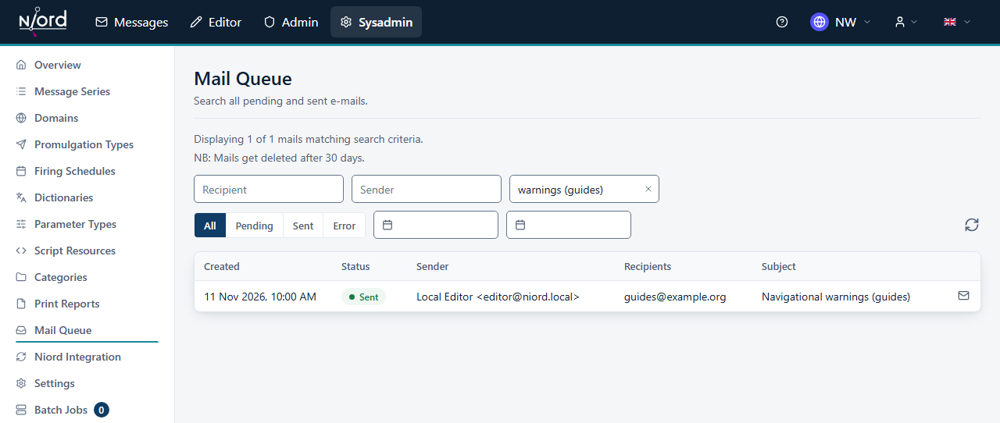
The picture shows the list filtered on the subject of one mail (see Mail Filtering).
Mails in Niord come from a few places:
-
An editor mails a selection of messages from the Messages page, as described in the E-mail Selection Action section of the editors' manual.
-
An editor who writes a comment to a message can mail it to recipients, as described in the Comments Editor Page section.
-
Most mails are sent by mailing lists, as described in the Mailing Lists chapter.
Niord deletes a mail from the queue when it is older than the number of days in the setting mailDeleteAfterDays
(30 unless it is changed). The page says so above the list ("NB: Mails get deleted after 30 days."). With a value of
0 or less, Niord deletes no mail, and the page shows no such note.
13.1. Sending Mails
A new mail in the queue is Pending. Every minute, Niord sends the pending mails that are due, at most as many as
the setting mailMaxPerMinute allows. A mail the mail server accepts becomes Sent. When sending fails, Niord
keeps the error with the mail and tries again later: after 1, 5, 15 and then 60 minutes. When the fifth attempt
fails too, the mail becomes Error, and Niord does not try again.
So check the queue now and then for mails with the status Error, and put right what caused them, such as a mistyped address of a user or a contact.
The setting mailValidRecipients decides who Niord really sends mail to (see Settings):
-
ALLsends every mail. -
A comma-separated list of addresses sends mail only to those addresses; the other recipients are left out, and a mail with no recipient left fails.
-
LOG, the value a new deployment starts with, sends no mail at all: Niord only pretends to send it, and the queue still shows it as Sent. Set the setting toALLwhen the deployment is to send mail.
Niord reads these settings when the server starts, so a change takes effect at the next restart of the server.
13.2. Mail Filtering
The queue may hold thousands of mails, so the list shows 20 mails at a time, with a pager below it. The line above the list says how many mails match the filter. The Refresh button at the right, two circling arrows, searches again with the same filter; the list does not refresh by itself.
The fields above the list filter it:
| Filter | Description |
|---|---|
Recipient |
Matches the addresses of the recipients. |
Sender |
Matches the address of the sender. |
Subject |
Matches the subject of the mails. |
All, Pending, Sent, Error |
Shows the mails of one status, or of all of them. |
From date, To date |
The two date fields with a calendar mark, after the status buttons: the first is the From date, the second the To date. They show the mails put in the queue within these dates. Either can be left empty. |
The list shows when each mail was put in the queue, its status, its sender, its first recipient (and how many others it has) and its subject.
13.3. Mail Details
Click the Open mail details button (the envelope) at the end of a row to see the whole mail: its sender and recipients, when it was put in the queue and when it was sent, the last error and the number of attempts when sending failed, its subject and its content.
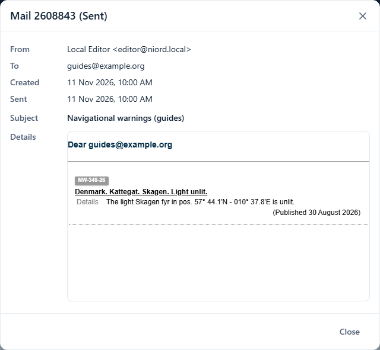
14. Integration
Niord can take the published messages of another Niord server into one of its own message series. Each such link is a Niord integration point: the address of the other server, and which of its message series go into which of yours. The Niord Integration page lets a system administrator manage the integration points.
A country built on the base product may add integration pages of its own, for its own systems; they are described in that country’s documentation.
14.1. The Niord Integration Page
The page is shown in the Sysadmin menu, as Niord Integration, only when the setting
adminIntegrationPageEnabled is on (see Settings); a deployment that does not use the function does
not see it. The page itself is always at the address /sysadmin/niord-integration of the administration
application, whatever the setting.
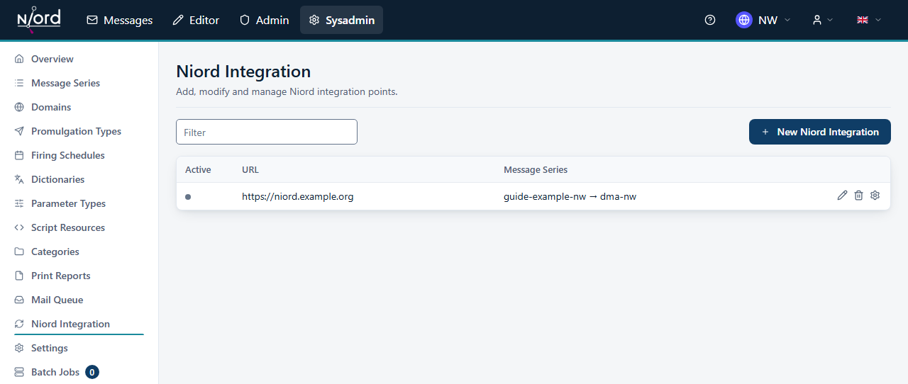
Each row shows whether the integration point is active, the address of the other server, and its message series mappings, each written as source series → target series. Type in the Filter field to show only the rows whose address or series contain the text. The buttons at the end of a row:
-
Edit Niord Integration (the pencil) opens the integration point in the editor.
-
Delete Niord Integration (the bin) deletes it, after you confirm. The messages it has imported stay.
-
Execute Niord Integration (the gear) fetches the messages now, instead of waiting for the next scheduled time. Niord answers "Integration pull started"; an error during the fetch is written to the server’s log only, so look at the target series to see the result.
14.2. Adding or Editing an Integration Point
Click New Niord Integration to add an integration point, or the pencil of a row to change one:
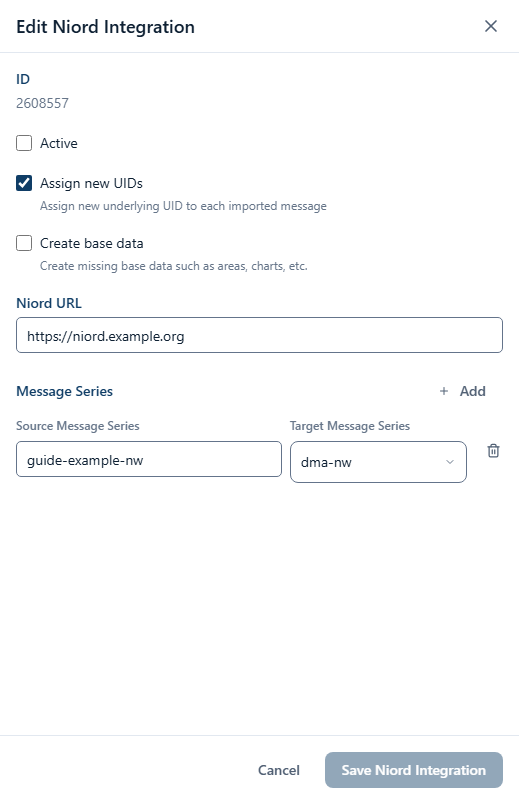
| Field | Description |
|---|---|
ID |
The number Niord gave the integration point when it was saved. |
Active |
Only an active integration point fetches messages, on its schedule or with Execute. A new integration point is active. |
Assign new UIDs |
Assigns a new underlying unique id (UID) to each imported message. On for a new integration point. |
Create base data |
Creates the areas, categories and charts an imported message names that this server does not have. When it is off, an imported message keeps only those this server already has. Off for a new integration point. |
Niord URL |
The address of the other Niord server, such as |
Message Series |
The mappings. In each row, Source Message Series is the id of a message series on the other server, and Target Message Series the series of this server its messages go into. Add adds a row, and the bin removes one. An integration point without mappings fetches nothing. |
Save Niord Integration saves the integration point, and Cancel closes the editor without saving.
14.3. How Messages Are Fetched
Niord looks for integration points to run every minute, and runs an active integration point about once an hour: 60 minutes after its last run, plus up to a minute more, so that integration points do not all run at the same time. A new integration point first runs an hour after it is saved, unless you click Execute.
On each run, Niord fetches the published messages of the source series from the other server, and for each target series:
-
imports, as published messages, the messages it has not imported before;
-
imports again a message the other server has changed since it was imported, and then cancels the old copy;
-
cancels a message it imported earlier that the other server no longer publishes.
Niord keeps the other server’s id of each message it imports as the message’s legacy id, and recognises its copies by it: a published message of the target series that has a legacy id the other server no longer publishes is cancelled. So give each integration point target series of its own, which no other import fills.
14.4. Private Addresses
Niord does not fetch from an address on a private network (such as 10.x.x.x or 192.168.x.x) or from the
server itself, so that an integration point cannot be used to reach into the network the server runs in. When the
other Niord server really is on a private network, turn on the setting niordIntegrationAllowPrivateHosts. Niord
reads this setting when the server starts, so restart the server after you change it.
The other server’s certificate must be one this server trusts, and must match its host name.
15. Settings
Settings are the values that adjust how a deployment of Niord works: its addresses, its languages, how it sends mail, the map it shows, and much more. Niord keeps them in its database. The Settings page lets a system administrator see and change them. You open it from Sysadmin → Settings.
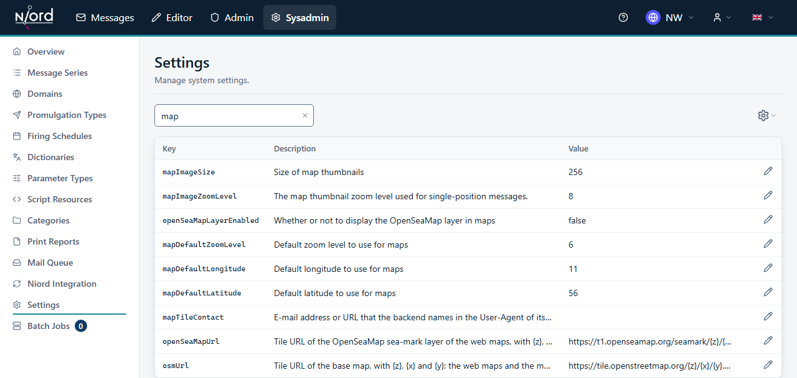
Each row shows the setting’s key, its description and its value; the value of a password is shown as "********". Type in the Filter field to show only the settings whose key or value contains the text (the picture shows the settings that contain "map"). The list shows 20 settings at a time, with a pager below it.
15.1. Settings Model
A setting is more than a key and a value. The Niord program declares each setting it reads, and the declaration gives it these attributes:
| Attribute | Description |
|---|---|
Key |
The unique name of the setting. |
Value |
The value of the setting, in the form its type gives. |
Type |
One of "String", "Password", "Integer", "Long", "Float", "Double", "Date", "Boolean", "Path" and "json". |
Description |
A text saying what the setting does. |
Cached |
Whether Niord may keep the value in memory for a few minutes instead of reading the database each time. |
Web |
Whether the value is passed to the web applications. The administration application reads these values when it starts, and a value from the server replaces the value the application was built with. |
Editable |
Whether the setting is shown on this page and can be changed there. |
Scope |
operator for a value a system administrator sets; state for a value only the system writes, which this page and the settings import refuse to change. |
Required |
Whether the setting must have a value: Niord refuses to save it empty. |
The page lists only the editable settings that the running version of Niord declares. A setting no version declares any more, such as one of an earlier Niord version, is not listed or exported, and stays in the database untouched.
The value of a "Password" setting never leaves the server: you can set a new one on this page, but you cannot see the old one.
15.2. Where Settings Come From
When Niord starts, it adds every declared setting the database lacks, with its default value, and it never changes a value the database already has: a value you set stays until you change it, also when a new version of Niord has another default. Niord does not add a setting back once its row is gone.
The default value comes from, in this order:
-
the file "niord.json" in the server’s home folder (the setting
niord.home), when it has the key; -
the settings file of the country the deployment is built on, or the base product’s;
-
the default the Niord program declares.
The file "niord.json" gives values only: the type, the description and the flags always come from the program, whatever the file says, and a key no version of Niord declares is skipped, with a warning in the log. Example:
[
{
"key" : "baseUri",
"value" : "https://niord.example.org"
},
{
"key" : "authServerUrl",
"value" : "https://niord.example.org/auth"
},
...
]15.3. Settings from Environment Variables
A system property or an environment variable with the same name as a setting takes precedence over the value in
the database, for as long as it is set. For the home folder, niord.home, the environment variable NIORD_HOME
works too. For example, start Niord with -Dniord.home=/srv/niord, or with the environment variable
NIORD_HOME=/srv/niord.
The Settings page still shows and saves the value in the database, but while such a system property or environment variable is set, Niord uses that instead.
15.4. Settings from Code
The Niord program declares its settings in its code, with their type and default value. For example:
@Setting(value = "mailDeleteAfterDays", defaultValue = "30", type = Type.Integer,
description = "Delete scheduled mails older than the given value. "
+ "A non-positive value means never.")
Integer mailDeleteAfterDays;Most settings declared this way are read when the server starts, so a change to one of them on this page takes effect when the server is restarted.
15.5. Settings to Set for a New Deployment
Among the many settings, these are the ones a system administrator usually sets first:
| Setting | Description |
|---|---|
|
The address of the Niord server. |
|
The address of the administration application. Links to messages in mails point here. When it is empty, the links
use |
|
The address of Keycloak (see Keycloak Integration). |
|
The country and the organisation that run the deployment. Both are required. |
|
The address of the user guides. Every help button of the administration application opens a page under this
address; the default is |
|
The sender of Niord’s mails, who receives them, and how long the mail queue keeps them (see
Mail Queue). Mail is only pretended to be sent until |
|
Shows the Niord Integration page in the Sysadmin menu (see Integration). |
|
How many days the files of batch jobs are kept (see Batch Jobs). |
15.6. Editing a System Setting
Click the Edit Setting button (the pencil) of a row. The editor opens beside the list:
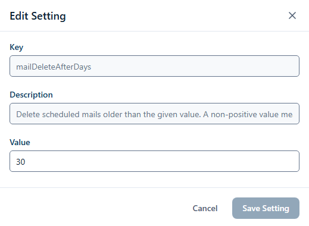
You can change only the value. The field depends on the type of the setting:
-
a checkbox for "Boolean";
-
a number field for "Integer" and "Long", and one that takes decimals for "Float" and "Double";
-
a hidden field for "Password";
-
a code editor for "json", where Save Setting is disabled while the text is not valid JSON ("Invalid JSON — fix the syntax to save.");
-
a text field for the other types.
Niord checks the value when you save: a value that does not fit the setting’s type, or an empty value for a required setting, is refused ("Error saving setting"), and the setting keeps its value.
15.7. Importing and Exporting Settings
The menu of the gear button (Settings actions) has Export… and Import….
The file is a JSON list of settings, for example:
[
{
"description": "The Keycloak URL",
"key": "authServerUrl",
"type": "String",
"value": "https://niord.example.org/auth"
},
{
"description": "The base application server URI",
"key": "baseUri",
"type": "String",
"value": "https://niord.example.org"
},
...
]The import runs as the settings-import batch job, which you follow on the Batch Jobs page. It only changes the values of settings this deployment has. It skips, each with a line in the job’s log, a key the running version of Niord does not declare, a state setting, a key the database has no row for, a value that does not fit the setting’s type, and a required setting that the file gives no value.
16. Batch Jobs
A batch job is a task Niord runs in the background, such as an import. Almost every kind of Niord data, areas, charts, categories, dictionaries, messages and more, is imported by a batch job, and the page that imports it starts the job and links to it. The Batch Jobs page lets a system administrator follow the batch jobs and stop, restart or abandon them. You open it from Sysadmin → Batch Jobs; the number beside the menu item is the number of batch jobs running now.
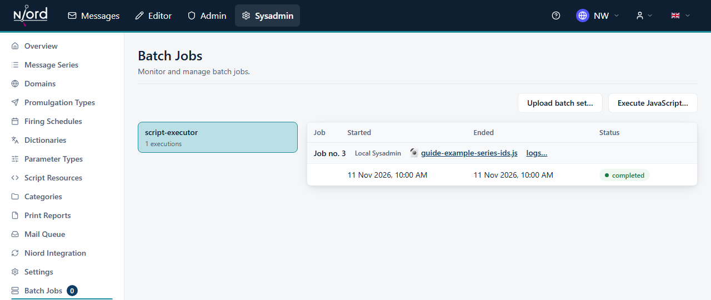
The left side of the page lists the kinds of batch jobs that have run in the deployment, each with the number of
its executions and, while some run, the number running. Click one to list its executions on the right. The address
/sysadmin/batch/<job name> opens the page with that kind selected; the import dialogs link to it. The picture
shows the runs of the script-executor job, which runs the scripts of Execute JavaScript… (see
Execute JavaScript).
The executions are listed from the batch engine, which keeps them only while the server runs: after a restart of the server, a kind of job lists the executions since that restart.
For each run, the list shows its job number, the user who started it, the data file it was started with and a logs… link, and for each execution when it started and ended and its status: starting, started, stopping, stopped, failed, completed or abandoned. Click the name of the data file to download it.
16.1. Batch Job Execution
A batch job is started from the administration application: by an import on the page that owns the data (for example a domains file on the Domains page), by a batch set uploaded on this page (see Batch Sets), or by Execute JavaScript… (see Execute JavaScript). The bootstrap of a new deployment runs batch jobs too (see Bootstrap, Releases and Imports). No folder on the server starts a batch job.
When a batch job starts, Niord copies its data file into the job’s own folder,
<batch job folder>/<job name>/execution/<year>/<month>/<job number>, where the job also writes its log files. The
batch job folder is the setting batchJobRootPath, by default the folder "batch-jobs" in Niord’s home folder.
Niord runs batch jobs with Jakarta Batch (https://jakarta.ee/specifications/batch/). A batch job usually reads, processes and writes its data in steps, each with its own log file, and commits a number of records at a time. So a running job can be stopped, and restarted or abandoned afterwards.
While a job runs, its execution has a stop link, and a job that reports its progress, such as a large message import, shows a progress bar. The job’s card counts it as running, and so does the number beside Batch Jobs in the menu. In the picture, a script that waits is running (a script job reports its progress as complete once it has read its script):
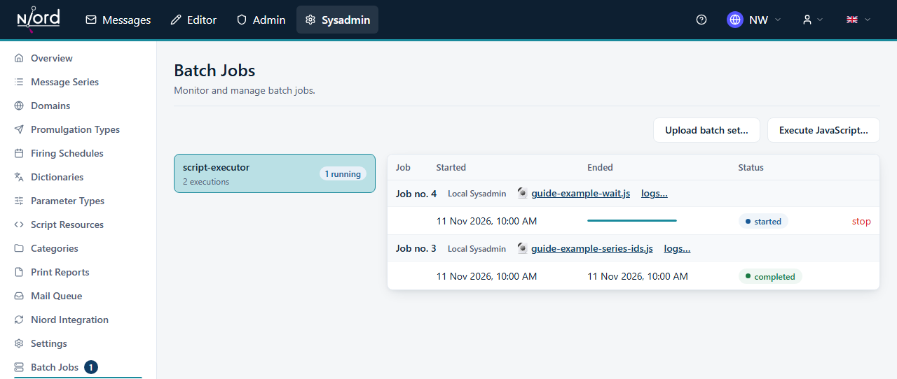
A job that fails stops and becomes failed; a job you stop becomes stopping and then stopped. A job you stop first finishes the records it is working on, so stopping can last a while; the waiting script of the picture became stopped when its wait was over:
What the job wrote up to its last commit stays; what it wrote after it is rolled back. The links an execution offers come from the server: restart runs the job again from where it stopped, and only the newest execution of a run can be restarted; abandon gives the run up for good. A job of the bootstrap of a new deployment is never restarted: Niord refuses, and says why.
Click logs… to open the Batch Job Log Files dialog. It lists the log files of the run at the top; click one to read it. The picture shows the log of a short script’s run, with the script and how long it ran. A log file gives its times as the server writes them, in the server’s time zone and date format, so they can differ from the times the list shows:
16.2. Batch Sets
Upload batch set… at the top of the page opens the Upload Batch-Set Archive dialog, where you upload a zip archive that holds several data files, to start several batch jobs in one go:
Besides the data files, the archive must hold a file named "batch-set.json", which lists the batch jobs to start, each with its data file and a delay. For example:
[
{
"jobName": "domain-import",
"fileName": "domains.json",
"delay": 2000
},
{
"jobName": "chart-import",
"fileName": "charts.json",
"delay": 5000
},
{
"jobName": "area-import",
"fileName": "areas.json",
"delay": 5100
},
...
]The delay, in milliseconds, orders jobs that depend on each other: if the areas of "areas.json" name the domains of "domains.json", the area import must start after the domain import, as above.
A batch set may name only these batch jobs: domain-import, category-import, param-type-import, mailing-list-import, report-import, promulgation-type-import, chart-import, area-import, source-import, publication-category-import, publication-import, publication-series-import, message-import and msg-archive-import. A batch set that names any other job is refused as a whole, and none of its jobs is started; the answer in the dialog says why. The script resource and dictionary imports run only from their own pages, where you first see what they would change (see Script Resources and Dictionaries), the settings import only from the Settings page, and scripts only through Execute JavaScript…. A new deployment gets its first data from its bootstrap, not from a batch set.
16.3. Execute JavaScript
Execute JavaScript… at the top of the page opens a dialog where you write a server-side JavaScript (see Server-Side JavaScript) and run it as a batch job:
| The script runs on the server with full access to the system, and nothing checks it: it can change or delete any data. Run only scripts you understand and trust. |
Schedule asks you to confirm, and then starts the script-executor batch job with the script as its data file.
Niord writes the script and the name of the user who scheduled it in the server’s log. Besides Niord’s services, the
script can use the database directly, as em (the entity manager). The job’s own log, which you open with logs…
on this page, shows the script and how long it ran, or the error it failed with; what the script prints goes to the
server’s log.
Like every Sysadmin page, the Batch Jobs page with Upload batch set… and Execute JavaScript… opens only for a system administrator.
16.4. Batch Job Clean-Up
So that the server’s disk does not fill up, Niord deletes the files and folders of a batch job’s executions when
they are older than the number of days in the setting batchFileExpiryDays (10 unless it is changed). It looks
for them every hour.
17. Mailing Lists
The Mailing Lists page is a section of the Admin area: Admin → Mailing Lists. Every administrator manages the recipients of the lists there, and a system administrator also creates, changes, copies and deletes the lists, their triggers and the import and export, on the same page. The page is described in one place, the Mailing Lists chapter of the Administrator Manual. The parts for system administrators are these:
-
Recipients: Managing Mailing List Recipients.
-
Adding, changing and copying a list: Adding or Editing a Mailing List.
-
Triggers, their subject and their mail body: Mailing List Triggers, with Scheduled Triggers and Status Change Triggers.
-
Trying a trigger without sending mails: Testing Triggers.
-
Deleting a list: Deleting a Mailing List.
-
Importing and exporting lists: Importing and Exporting Mailing Lists.
The mails the lists send can be followed on the Mail Queue page.
18. Bootstrap, Releases and Imports
This chapter explains how data gets into a deployment of Niord: how a new deployment gets its first data, how a new version of Niord offers new or changed templates, and what a system administrator imports.
18.1. Data and Program
A deployment of Niord consists of the program, which a new version replaces, and its data, which lives in the database. Everything you can see and change on the Admin and Sysadmin pages is data: the script resources (templates and scripts), the print reports (the built-in ones included), the categories, the mailing lists, the domains, areas, charts and message series, the parameter types you define, the data dictionaries and the promulgation types, besides the messages and publications.
Niord keeps to one rule about data: a new version never changes or deletes the data of a running deployment. The program brings no base data of its own into a running deployment. Base data arrives in three ways, each the act of a person:
-
the bootstrap of a new deployment, once, on an empty database (see The Bootstrap of a New Deployment);
-
an import a system administrator makes, on the page that owns the data (see Importing a Release);
-
what a system administrator or an administrator adds or changes on the pages themselves, such as a new category or print report.
Messages are another matter: editors write them, and an integration point set up on the Integration page fetches messages from another Niord server by itself, on its schedule.
A new version adds only two kinds of things by itself, when it starts: the keys of its texts (the five default dictionaries "web", "message", "pdf", "mail" and "template") and the settings it declares, each only when the database lacks it, and never changing one the database has. Niord remembers what it added: a text key or a setting you deleted is not added again.
18.2. What Niord Never Does
Because the data is the deployment’s own, Niord has no function that puts the program’s copy back:
-
There is no "reload" or "reset to default" of script resources, dictionaries or anything else. A template you changed stays as you changed it, also when a new version brings another one.
-
Niord never copies a template from its program files into the database, and never reads one from them: a template is read from the database only.
-
A report, a template or a text you deleted stays deleted; Niord does not create it again when it starts.
-
No folder on the server is watched: putting a file in a folder imports nothing.
The standard parameter types are the exception: they are part of the program, and the Parameter Types page shows them without letting you change them.
To get something back, import it: from a release folder (below), from an export of another deployment, or, for a text, from the texts file of a release folder.
18.3. The Bootstrap of a New Deployment
A new deployment starts with an empty database. The person who installs it runs the bootstrap once, as a system
administrator: the bootstrap command of the server (POST /rest/bootstrap), usually through the backend’s script
bootstrap.sh, which sends the bootstrap archives and waits until the bootstrap has
ended. The base product’s archive goes first; a country built on the base product sends its own archive after it,
in the same run, and the country’s values then replace or add to the base product’s.
The base product’s bootstrap holds the base product’s generic data, in English:
-
the domain "Master", through which a system administrator reaches the Sysadmin pages before the deployment has domains of its own;
-
all the base product’s templates and scripts (see Script Resources);
-
the built-in print reports Standard, Draft and Public (see Print Reports);
-
the categories and templates of lights, buoys, beacons, obstructions, drifting objects and radio navigation, and the category "Firing Exercises" (see Categories);
-
the parameter types those templates use, and the "aton" data dictionary;
-
the promulgation types NAVTEX, Twitter and Audio.
It holds no settings, which the server adds itself when it starts (see Settings), and no messages.
The bootstrap runs only on a new, empty database:
-
When the server first starts on a database, it records whether the database is new. A database that already held a domain, an area or a message is never bootstrapped.
-
When the bootstrap starts, Niord checks the database once more, and refuses if any table holds data, naming the first such table.
-
The bootstrap runs its imports as batch jobs, which the Batch Jobs page lists.
A system administrator can ask for the state of the bootstrap at GET /rest/bootstrap: pending (a new database,
not bootstrapped yet), existing (a database that held data at its first start), in-progress, applied or
failed (with the error).
A bootstrap runs once, and is never tried again on the same database. When it failed, or broke off because the server stopped, the command refuses it from then on, and none of its batch jobs can be restarted. The remedy is to create the database again, empty, start the server on it, and run the same bootstrap again.
18.4. Release Folders
When a new version of Niord brings a new or changed template or script, the new version does not apply it: it offers it in a release folder, and you decide whether to import it.
A release folder is named after the date and the topic of the change, for example "2026-11-02-accumulated-period", and the release notes of the first version that contains it name it. The folders come with the base product’s bootstrap package of each version, which holds every release folder made so far, so you find each one also when you skip versions. A release folder never changes once it is published. A country built on the base product has release folders of its own in the same form.
A release folder holds:
| File | What it is |
|---|---|
README.md |
What changed, and how a running deployment takes the change: which paths to import, which to overwrite, and what to leave. |
script-resources.json |
The base product’s templates and scripts at this release, in the format of the import of the Script Resources page. |
texts.json |
The base product’s English texts at this release, in the format of the import of the Dictionaries page. |
missing-paths.sql |
The missing-path report (see The Missing-Path Report) as an SQL query that only reads, so that you can see before you upgrade what the deployment lacks. |
18.5. Importing a Release
To take the changes of a release folder into a running deployment:
-
Read the folder’s "README.md": it names the paths that changed, and says what to tick.
-
If you like, run "missing-paths.sql" against the database before the upgrade, to see which paths the deployment lacks. It changes nothing.
-
Upgrade Niord to the version whose release notes name the folder.
-
Open Sysadmin → Script Resources, choose Import… in the menu of the gear button, and choose the folder’s "script-resources.json". Nothing is written yet: Niord shows what the import would do (see Importing and Exporting Script Resources).
-
Under Would add, keep ticked only the paths the deployment should get; Only the paths the missing-path report lists keeps just those that something in the deployment names. Under Would overwrite, tick a path only when the README says its template changed and you want the new one: click Show diff first, because a template the deployment edited loses its edits when you overwrite it. You may instead carry the change into your own copy on the Script Resources page.
-
Click Import ticked, and follow the script-resource-import job on the Batch Jobs page. Every path it writes is recorded in the script resource’s revisions with your name and the source Import.
-
Check that the missing-path report is empty.
New text keys need no import: the new version adds them in English when it starts, and a country’s language pack brings their translations. The folder’s "texts.json" is for a text key the deployment deleted: import it on the Dictionaries page, where the preview offers such a key unticked, and only a key you tick is added again.
Whether to import at all is your decision: nothing applies these files by itself, and a new deployment needs none of them, because its bootstrap brings the current templates.
18.6. The Missing-Path Report
A template or script that something names but the database lacks makes that function fail: a report prints nothing, a mail is not written. The missing-path report lists them:
-
each path of a template or script named by the Niord program itself, by a category, a mailing list trigger, a promulgation type or a print report, or included or loaded by another template or script, that has no row in the database, with what names it;
-
each language variant of such a path that the base product offers and the database lacks;
-
each built-in print report (
standard,draft,public) the deployment lacks.
Niord writes the report to its log every time it starts, except on a new database whose bootstrap has not been
applied (while it waits, runs or has failed), as a warning with one line for each entry, or "no missing path". A system administrator can read it at any time at
GET /rest/script-resources/missing-paths. It only reads. When you import a release file on the
Script Resources page, the preview marks the paths it lists.
18.7. Other Imports
Besides script resources and texts, each page of base data has an import of its own, in the menu of its gear button: areas, charts, sources, domains, categories, parameter types, promulgation types, print reports, mailing lists, publications, settings and more. Each import runs as a batch job (see Batch Jobs), and a batch set uploaded on the Batch Jobs page can start several of them in one go (see Batch Sets).
19. Keycloak Integration
Niord signs its users in with Keycloak, an open source identity and access management server, which is documented at https://www.keycloak.org. Keycloak holds Niord’s users, their passwords and their roles; Niord asks Keycloak who a user is and what the user may do.
Once Niord has been set up, administrators seldom need Keycloak’s own administration console: Niord’s Domains page creates what a domain needs in Keycloak, and the Users & Contacts page of the administrators' manual manages users and their groups. This appendix explains how Niord uses Keycloak, for the system administrator who sets it up. It assumes you know Keycloak’s basic terms: realm, client, role, user and group.
The pictures of this appendix are taken in the administration console of the Keycloak that Niord’s local development stack runs, with its development realm "niord".
19.1. The Realm
A deployment of Niord uses one Keycloak realm: a separate set of users, clients and roles. One Keycloak server can
serve several deployments, each in a realm of its own. The deployment’s configuration names the realm and the
Keycloak server, and the setting authServerUrl gives Keycloak’s address (see Settings).
The realm holds:
-
a client for each domain of Niord, which carries the roles of that domain (below);
-
the client
niord-web, through which the administration application signs users in; -
the users, and the groups that give them their roles.
19.2. Niord Domains
Domains are described in the Domains chapter. For each domain there is a client in Keycloak whose
client id is the domain’s id, and whose name is the domain’s name. For example, the domain "NW" has the client
niord-nw:
The list also has the client niord-client-master ("Master"): the client of the domain "Master" that the bootstrap
of a new deployment makes (see The Bootstrap of a New Deployment). The deployment in the pictures has
no domain "Master" any more, which is why its Domains page does not list it, but the realm keeps the client.
The domain clients are bearer-only: nobody signs in through them; they only hold the domain’s roles. The users
sign in through the client niord-web, a public client of the web application.
When you create a domain on the Domains page, Niord creates its client in Keycloak, with the roles below. The domain’s editor shows whether the client exists in Keycloak, and Create in Keycloak creates it when it does not, for example after a domain was imported. The Keycloak… button of the Domains page opens Keycloak’s administration console.
19.2.1. Roles
As described in the System Administrators Manual chapter, a user has a role in each domain: user, editor, admin or sysadmin. These roles are roles of the domain’s client in Keycloak:
The roles are composite: each includes the roles below it. A user with the sysadmin role also has the admin role, a user with admin also has editor, and a user with editor also has user.
One more client role, publication-curate, gives a user the right to add messages to, and remove them from, a
publication issue by hand (see the Publications chapter of the
administrators' manual). It is not part of the ladder above: give it to the users who curate publications. Niord
does not create it for a new domain: add it to the domain’s client in Keycloak (Create role, named
publication-curate), and give it to a group. For the time being, Niord also lets a user with the admin role
curate publications, so that the function works in a realm that does not have the role yet.
19.3. Niord Users
Niord’s users are created and kept in Keycloak. Niord’s Users & Contacts page lets an administrator add, change and delete users, and manage their groups, without opening Keycloak. Niord keeps a copy of a user’s name and e-mail address, which it updates when the user signs in.
Keycloak can also sign users in through another identity provider, such as an organisation’s Active Directory Federation Services, another Keycloak, or an LDAP directory. A user who signs in that way for the first time is then created in Keycloak automatically. See Keycloak’s documentation of identity providers and user federation.
19.3.1. User Groups
Giving each user roles in each domain would be tedious. Instead, give the roles to Keycloak groups, and make the users members of the groups. For example, the realm in the pictures has these groups:
-
Sysadmin: the sysadmin role in every domain.
-
Admins: the admin role in the domains "NW", "NM", "Firing Areas", "NM Almanac", "NM Annex" and "NW Greenland".
-
Editors: the editor role in the same domains.
-
Case Officers: the user role in the same domains.
-
FE Editors: the editor role in the "Firing Areas" domain only.
-
MAS duty: the editor role in the "NW" domain, for a duty team that writes navigational warnings.
-
AOK Editor: the editor role in the "NW Greenland" domain only.
Niord creates a domain’s client, and manages users and their groups, in Keycloak with the access token of the user who does it. So the groups of the people who do that, Admins and Sysadmin here, also have the roles manage-users and manage-clients of Keycloak’s own client "realm-management".
The groups are kept in Keycloak:
Each group is given the roles of the domain clients on its Role mapping tab. In the example below, the group "MAS
duty" has the editor role of the client niord-nw, that is, of the "NW" domain:
Groups are made and changed seldom, while users join and leave groups often. So Niord lets an administrator manage a user’s groups on its own pages, as described in the Managing User Group Membership section of the administrators' manual.
19.4. User-Specific Editor Fields
Which fields the message editor shows can be set in many places: settings give a base set and a set for each main
type (editorFieldsBase, editorFieldsNw and editorFieldsNm), and areas, categories and message series can add
fields for their messages. On top of that, Keycloak can give a user, or a group, fields of their own, which come
last and so win over the others.
Step 1: the client niord-web needs two mappers of the type User Attribute, which put the user attributes
"editorFieldsNw" and "editorFieldsNm" into the user’s access token as claims of the same names. You find them on the
client’s Client scopes tab, in its dedicated scope ("niord-web-dedicated"). The development realm has them:
Step 2: give the user, or more likely a group, the attribute "editorFieldsNw" (for navigational warnings) or
"editorFieldsNm" (for notices to mariners). Its value is a JSON object that turns fields on (true) or off
(false). In the example below, the group "MAS duty" turns off the publication and references fields:
{ "publication": false, "references": false }.
19.5. Niord Security
The administration application, like every client of Niord, calls Niord’s REST interface. Each call carries the
user’s access token from Keycloak and names the current domain in the request header NiordDomain. Niord gives the
caller the roles the token holds for that domain’s client.
So the server checks access with standard annotations. In the simplified example below, @RolesAllowed(Roles.ADMIN)
lets the call through only when the caller has the admin role in the current domain, and refuses it otherwise:
@PutMapping(value = "/area/{areaId}",
consumes = "application/json;charset=UTF-8",
produces = "application/json;charset=UTF-8")
@RolesAllowed(Roles.ADMIN)
public SystemAreaVo updateArea(@PathVariable("areaId") Integer areaId,
@RequestBody SystemAreaVo areaVo) {
Area area = new Area(areaVo);
return areaService.updateAreaData(area).toVo(SystemAreaVo.class, DataFilter.get());
}